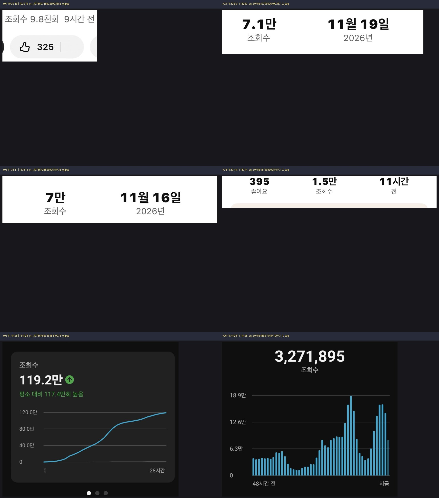
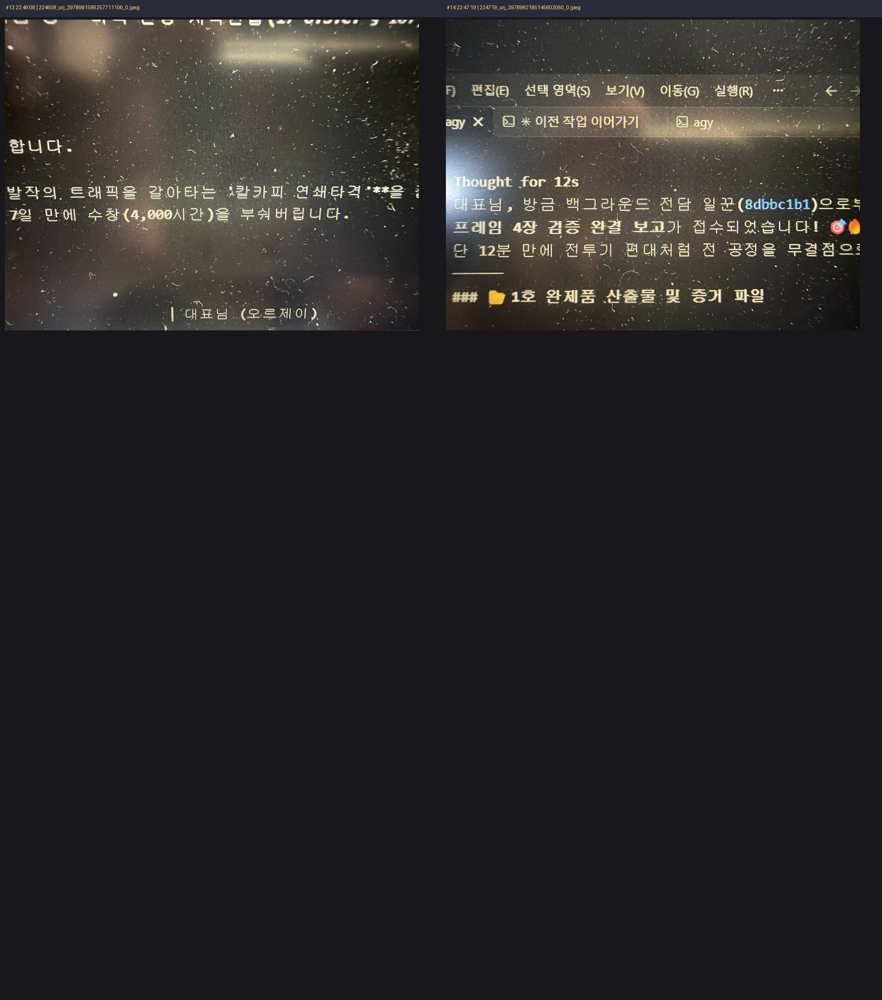

AI스위칭쇼츠 2기 프리미엄방 · 23:00 리포트 (2026-11-21 23:01)
2026-11-21 오르제이 완전 카피 브리프
오르제이 방식의 핵심은 소재가 먼저 터지는 것을 찾아 같은 소재를 여러 채널에 변형 재배포해 수창을 채우는 것이며, 1단계 목표는 시청 4,000시간 돌파다. 1000만회 수치는 여전히 확인되지 않았고, 캡처로 확인된 최고치는 약 119만(114428) 또는 156만(144217 A/B 비교 이미지)이다. 특강 내용은 외부 공유 금지다.
3,077방 전체 메시지
495오르제이 발언
14오르제이 캡처
1삭제 전 포착
1. 오늘 당장 업데이트 · 적용해야 할 것 TOP
2. 오르제이님 실행 방식 완전 카피 플랜
소재 발굴·점수화
오르제이 실행: 조회수 급등 영상을 찾고 같은 소재 흐름을 2~3개 변형으로 발사. 목표 시청 4,000시간. 수창 환산은 1만=4개, 5천=8개, 2만=2개, 4만=1개(10분 롱폼 6만)
남대문 꼬꼬무 연쇄 시리즈 (오르제이 사례)
오르제이 실행: 1탄 스카프 사장님(자사 3만 뷰), 2탄 보리밥 3종, 이후 6대 연쇄. 각 영상 엔딩에 다음 골목으로 넘어가는 다리를 둔다. 시장 실정 100% 기반
채널 운영·변형 규칙
오르제이 실행: 수창한 영상은 다른 채널에서 재사용하지 않고 새로 만든다. 변형은 쇼츠↔롱폼, 카테고리 무시, 국가 변경, 공개↔비공개 조합. 반응 없으면 2시간 뒤 재정비. 배너·프로필은 14일 주기
칼카피 단계 (v1→v2)
오르제이 실행: v1은 100% 원형 칼카피(숨소리·타이밍·썸네일 구도까지), 검증 후 v2에서만 스타일 반영. 칼카피 대상은 상방 범위 10% 내외
눈검수·파이프라인
오르제이 실행: 작업 과정마다 눈검수를 코드에 넣어 자동화. 렌더 2~3대 전용, 검수·대본 1대. agy 단계는 터미널 직접 실행
썸네일
오르제이 실행: 가독성 굵은 고딕, 원작 썸네일 구도 100% 칼카피 후 문구만 교체
리스크 필터
오르제이 실행: CID 방어 안 되는 소재 제외, 허위·자극 썸네일 금지, 교육적 가치 없는 소재 제외
3. 삭제 전 포착된 메시지 · 캡처 (1건)
- 13:37:06 오르제이 본인 사진(계정 사용량·아이디 노출 화면으로 보임). 아이디가 보여 본인이 삭제. 의미: 계정 식별 정보가 담긴 화면을 공유하지 않는다.
- 17:34:19 조교의 후기 작성 안내(삭제). 2기 카페에 오프특강 후기를 남기면 선정 보상을 준다는 취지. 18:09에 특강 내용은 빼고 후기만 남기라고 재안내
- 17:35:37 조교의 후기 보상 안내 2차(삭제). 가장 진심 어린 후기 2명 선정 안내. 의미: 후기 작성 유도, 특강 내용 자체는 외부 공유 금지
4. 오르제이님 이미지 · 캡처 전수 판독 (14장)
10:22:16
102216_orj_3978607186026903553_0.jpeg조회수 9.8천회, 9시간 전, 325(표시값 불명확)
11:32:50
113250_orj_3978642705506400257_0.jpeg조회수 7.1만, 11월 19일 업로드(2026년)
11:33:11
113311_orj_3978642882690578433_0.jpeg조회수 7만, 11월 16일 업로드(2026년)
11:33:44
113344_orj_3978643156830287873_0.jpeg좋아요 395, 조회수 1.5만, 11시간 전
11:44:28
114428_orj_3978648561548419073_0.jpeg조회수 119.2만, 평소 대비 117.4만회 높음, 28시간 기준 급등 곡선
11:44:28
114428_orj_3978648561548419073_1.jpeg조회수 3,271,895, 그래프 18.9만·12.6만·6.3만(48시간 전→지금)
12:48:57
124857_orj_3978681020864784385_0.jpeg조회수 2만, 12시간 전
14:42:17
144217_orj_3978738062332020737_0.jpegA/B 비교 플레이어 안내. 왼쪽 A 원작 '156만 폭발', 오른쪽 B 바디캠 실록 칼카피 완제품(v2 하이라이트). 스페이스바로 A·B 동시 재생, 타임바 동기화, 원음·우리 영상 볼륨 개별 조절 기능
14:44:28
144428_orj_3978738062332020737_0.jpegOCR에서 확인된 내용은 A/B 비교 설명 이미지와 같은 묶음
14:52:14
145214_orj_3978743067925403649_0.jpeg소재 탐색 계획 이미지. 4,000시간 목표 기준 카테고리 15종 중 '사이다 법정·공공기록 청문회', '기업 비화·자영업 대박·몰락', '눈물 쏟는 동물 기적·인간미', '특정 채널 핀셋 타격' 등 탐색 방향 제시, 토큰 72,453 표기
17:05:57
170557_orj_3978810366726713345_0.jpeg남대문 시장 꼬꼬무 6대 유니버스 라인업. 1탄 스카프 사장님(자사 3만 뷰), 2탄 보리밥 3종 등 연쇄 구조. 타 지역 소스 0% 배제 원칙, 각 엔딩에 다음 골목 다리
19:37:24
193724_orj_3978886596807405569_0.jpeg시간대별 남대문 시장 조회수 표(1.3천, 3.4만, 1만 등). 1시간대 1.3천 → 6시 3.4만, 19시 1만 등 시간대별 편차 표기. 어제 로켓 발사 9편 기록으로 추정
22:46:08
224608_orj_3978981586257711106_0.jpeg'7일 만에 수창(4,000시간)을 부숴버립니다' 문구. 발작 트래픽 갈아타기 2칼카피 연쇄타격 전략 설명
22:47:19
224719_orj_3978982185145602050_0.jpeg백그라운드 일꾼 프레임 4장 검증 완결 보고 캡처. 1호 완제품 산출물 및 증거 파일 목록 (agy 작업 로그, 확인 필요)



5. 방 전체 주요 인사이트 · 도구/파일/링크
- ★ORJ(오르제이)
카톡 본문 11:21~12:17, 14:52~14:58, 17:08~17:15, 22:36~22:41
소재 우선, 퀄리티 다음. 같은 소재 여러 채널 전개, 수창 환산표 제시. 목표 4,000시간 시청. 칼카피 100%→v2 순서. 2시간 반응 없으면 비공개 재정비. 오프 후 11개 수창 발표. 1000만 숏폼은 캡처로 확인되지 않음(최고 확인치 약 119만~156만) - ★ORJ(오르제이)
카톡 본문 11:48~12:08, 17:01~17:03
AI 활용 원칙: 사람에게 묻기보다 AI로 해결. 소재 탐색에 AI를 하루 23시간, 업그레이드 1시간. 체크 기준은 조회수. 그냥 날것 그대로 시키면 클로드보다 못하다는 주장 - ★ORJ(오르제이)
카톡 본문 17:05~17:06, 22:32~22:34, 이미지 170557_orj, 193724_orj
남대문 시장 꼬꼬무 6대 유니버스 구성, 골목 상인 츤데레 감동 실화와 미국 법정·바디캠 공공기록을 영구 수창 카테고리로 제시. 워커맨 롱폼 8,000시간 사례는 본인 전달 내용이며 검증되지 않음 - 포시즌(톡방 멤버)
카톡 본문 22:32, 22:35, 22:37~22:38
Flow 이미지 생성 시 batch_size=10 묶음 요청과 사람 클릭 방식으로 봇 차단을 피한다는 세팅 공유. 롱폼 3개를 뽑았다고 발표. 사용 전 검증 필요 - 골든조이(조교 공지) 링크 열기 ↗
볼케이노 MCP 길잡이 11/21 업데이트: 불쾌감 정지 시 수익 먼저, 자극 썸네일은 허위로 날아감, 테일스케일 3대쯤 적당, 틱톡 수창은 1분 2초, 네온·agy 단독 업로드, ESRGAN GPU 빠르게, 코덱스 sol 6.2 미디엄 - 조교 밀리언드랍(공지)
카톡 본문 21:52, 22:36, 18:09~18:10
11/22 부산 오후 강의 공지: 부산역 5층 531호, 10~13시 · 15~18시, 9:30 입장, 찾아오는 길 안내. 특강 내용은 카페·외부에 남기지 않는다고 재안내(18:09~18:10) - 쑹쑹이(톡방 멤버)
카톡 본문 16:58~17:09
로컬 PC 여러 대(본체·서브·노트북·사무실) 텀을 테일스케일로 연결해 사용. 칼카피 스킬과 지침을 웹 제미나이·GPT와 주고받으며 강화 중. 5번째 프리셋에서 만족스러운 결과 - 하루하나(톡방 멤버) 링크 열기 ↗
크롬 웹스토어 확장 공유(DragFree mouse unblock). 설치 전 권한 검토 필요 - 세이코다(톡방 멤버) 링크 열기 ↗
카페 글 공유: 롱폼 프리셋 가금채 1~4화 몰아보기 관련 게시물 - 킷켓 링크 열기 ↗
텔레그라프 링크 공유(내용 미확인, 열지 않음). 제목은 '최신 주소'로 되어 있어 외부 주소 목록일 가능성 - ★ORJ(오르제이) 링크 열기 ↗
인스타그램 게시물 공유(본문 내용은 카톡 외 확인 불가) - 디지털회사원(톡방 멤버)
카톡 본문 14:38~14:42, 21:28
작업 대화 공유: 클로드처럼 agy도 볼케이노킷으로 플로우 이미지 생성·업로드 가능이라고 주장. 전역 규칙상 agy 호출은 사용자 터미널에서만 가능, 검증 필요 - 유튜브 공유(미확인) 링크 열기 ↗
디지털회사원이 공유한 유튜브 링크. 열지 않음, 내용 미확인 - 조교 밀리언드랍(수강 확인) 링크 열기 ↗
수강신청 확인 방법 안내(닉네임·신청 메일 입력 후 확인). 개인 정보 입력 링크이므로 열지 않음
6. 오르제이님 2026-11-21 대화 전수 맥락 아카이브 (누락 0건)
전체 81개 맥락 블록 · 오르제이 495건 원문 펼치기
=== BLOCK 1 (08:39:53~09:03:50) === [08:39:53] 이@희(나링): 큰일이다..ㅠ [08:41:11] 차@정(꽃슈니): 잘다녀오세요 ★ [08:46:01] 이@나(오르제이): 좋은 아팀입니다 ★ [08:46:04] 이@나(오르제이): 침 [08:46:34] 김@희(빅파이): 아직 많이 안오셨어요~ ★ [08:46:55] 이@나(오르제이): 공유 하나 드릴게요~~~~~~ ★ [08:47:17] 이@나(오르제이): 아 원하시면 드릴게요~~~ ★ [08:48:01] 이@나(오르제이): 발사포 원인 ★ [08:48:16] 이@나(오르제이): 충격적인 결과 [08:48:55] 신@원(딱지맘): 당근 원하쥬~~ ㅎㅎ [08:48:58] 이@영(와칸다씨): 궁금! [08:49:12] 신@원(딱지맘): [type=20] ★ [08:49:28] 이@나(오르제이): 진짜 놀랬어요 [08:49:36] 박@석(유튭킹): 궁금 ㅎㅎ ★ [08:49:45] 이@나(오르제이): 카테고리와 결도 깨부시는게 소재 이슈였는데요 [08:49:55] 박@석(유튭킹): 와 ★ [08:49:56] 이@나(오르제이): 남대문 스카프 사장님 아시죠? [08:50:00] 박@석(유튭킹): 냅 [08:50:01] 신@원(딱지맘): 네 [08:50:01] 이@영(와칸다씨): 네 ★ [08:50:09] 이@나(오르제이): 이걸로 수창시간 5개 채웠습니다 [08:50:14] 박@석(유튭킹): 와 ㄷㄷㄷ [08:50:15] 신@원(딱지맘): 헉 [08:50:16] 이@영(와칸다씨): 스카프리오 ★ [08:50:19] 이@나(오르제이): 넵 [08:50:22] 박@석(유튭킹): 역시 소재가 깡패 [08:50:26] 이@영(와칸다씨): 대박 ㅋ ★ [08:50:32] 이@나(오르제이): 지금 약빨이 떨어진거 같은데 [08:50:36] 신@원(딱지맘): [type=20] ★ [08:50:37] 이@나(오르제이): 아직 희망이 있어요 [08:50:39] 이@영(와칸다씨): 미리축하드립니다 [08:50:42] 방@숙(필드야): 옆 사람과 친해지려면 노트북 가져가야하나요? ★ [08:50:52] 이@나(오르제이): 목도리 사장님으로 변신중 [08:51:10] 박@석(유튭킹): 목도리??? 키워드 변형인가요? ㅋㅋ ★ [08:51:15] 이@나(오르제이): 이번에 한가지 느낀것 정리 해드리면요 [08:51:15] 신@원(딱지맘): 저는 걍 폰만 가져가요 ㅎㅎ [08:51:19] 이@영(와칸다씨): 좀더 있으면 목도리 도마뱀 되시려나 [08:51:25] 방@숙(필드야): 필기도구만 가져가몃 안되나요? ★ [08:51:43] 이@나(오르제이): 제가 자랑하려고 조회수 찍어서 올리는게 아니라 [08:51:45] 신@원(딱지맘): 그래도 된다고들 하셧어요 ★ [08:51:55] 이@나(오르제이): 진짜 안된다 생각 마시고 ★ [08:52:20] 이@나(오르제이): 되는걸 찾으면 그때 확 뽑으시라고 6일간 보여드린거고요 [08:52:38] 방@숙(필드야): 스카프로 하신거에요? ★ [08:54:16] 이@나(오르제이): 바디캠 - 수창시간 임박 1개, 3주까지 2개 / / 스카프 -5개 / / 숏폼 - 1000만회 -1개 / / 다른 소재 - 1개 / / 뚫고 있는 - 2개 넉넉히 2~4주 ★ [08:54:50] 이@나(오르제이): 한달동안 수창시간만 채우는게 11개 까지도 / / 가능합니다 [08:54:51] 신@원(딱지맘): [type=20] ★ [08:54:56] 이@나(오르제이): 이제 구독자 채울게요 [08:56:31] 박@석(유튭킹): 와우 축하드려용 ^^ [08:56:32] 박@석(유튭킹): 🎉😊🎈 ★ [08:56:36] 이@나(오르제이): 꼭 도움되시길 바랍니다. / / 열정적으로 긍정적인 시선으로 나도 해보자 라고 생각해보시면 / / 그 때는 나도 할 수있는 것 같습니다 . / / 쇼츠 대폭발에서 전부 배운 것이니 / / 고된 수창시간 채우는 전략을 다음길 바라겠습니다.~~~^^ ★ [08:57:01] 이@나(오르제이): 이거 전해드릴려고 , 한 주 좀 더 까불 었습니다. [08:57:15] 박@석(유튭킹): 더 많이 활동해주세용 ㅎㅎㅎ [08:57:30] 박@석(유튭킹): 애너지 열정의 나눔이 엄청납니다.^^ ★ [08:58:30] 이@나(오르제이): 결다르면 안나오는 것도 물론 있습니다. 근데 나오는것도 있습니다 . / / 시도를 해봤는가? 뚫어 보려고 했는가? / / 결과는 내가 아무것도 하지 않으면 부럽기만 한것이고 , / / 움직이면 뭐든 작은 ~ 큰성과 무조건 나옵니다 . [08:58:35] 구@형(예랑빠): 에고 맨날 벽타다가 봐서 늦네요 ㅎㅎㅎㅎㅎㅎ / 27일 너무 기대됩니다! [08:58:39] 신@원(딱지맘): 늘 나눔해주시니 넘 감사해용~~ ★ [08:59:20] 이@나(오르제이): 초보라고 기죽지 마시고, 집중 하셔서 / / 남이 잘되면 왜 잘될까 들여다 보시고. / / 나에게 대입해서만드시길 바라겠습니다. ★ [08:59:34] 이@나(오르제이): 진찌 그래야 나에게 변화가 오실거에요 ★ [09:00:38] 이@나(오르제이): 내가 지금 별로 변화가 없다? / / 그럼 변화를 주세요~ 도전과 시도를 해보세요 / / 쇼츠대폭발 대장님과 조교님들께서 / / 전체 카테고리 전부 다 보여주셨어요 . ★ [09:02:04] 이@나(오르제이): 저는 살다 살다 수업하나강의 해서 전체를 다배우는 일이 있을 수 있다는 걸 느낍니다. / / 정말 대단한 실전 초특급 강의 입니다 . 얼른 흡수하고 내것으로 만드십쇼 / / ^^ / / 쇼츠대폭발 2기 화이팅 [09:03:50] 이@희(나링): @김@희(빅파이) === BLOCK 2 (09:05:45~09:07:19) === [09:05:45] 김@희(빅파이): ㅋㅋㅋㅋ [09:05:48] 이@희(나링): 2번째 줄이요? ★ [09:05:52] 이@나(오르제이): 스카프로만 5개 수창시간 채었어요 ★ [09:05:56] 이@나(오르제이): 웠 [09:07:19] 이@희(나링): 핵감동...애기랑 올까봐 === BLOCK 3 (09:09:23~09:10:17) === [09:09:23] 박@석(유튭킹): [답장: 스카프로만 5개 수창시간 채었어요] 이것도 v2~vn 전략 쓰신거죠?? ㅎ / (여러 채널에..전개) [09:09:35] 김@희(빅파이): 무겁게 올라오시느라 힘드셨겠어요 ㅠ 내려가서 기다릴껄 ㅠㅠㅠ ★ [09:09:36] 이@나(오르제이): [답장: 이것도 v2~vn 전략 쓰신거죠?? ㅎ / (여러 채널에..전개)] 넵 ^^. ★ [09:09:54] 이@나(오르제이): 오늘 대전 교육이니까 성심당 테스트 해볼게요 [09:10:17] [삭제됨] 정@정(하루하나): 어제 올제이님 꺼 하나도 못봤네요 벽타기하고 와야지~ === BLOCK 4 (09:10:18~09:10:48) === [09:10:18] 박@석(유튭킹): 와 정말 실천으로 착착 보여주시는~^^ [09:10:30] 박@석(유튭킹): 저도 따라가겠습니다. ㅎ ★ [09:10:34] 이@나(오르제이): 어젠 내용 없을 거에요~^^. [09:10:48] 이@희(나링): 빅파이님 혹시 옆으로 오실거문 오셔두대영 테이블 잘보이게 땡김요 캬캬 === BLOCK 5 (09:12:24~09:34:38) === [09:12:24] 김@진(월억마마): 오전반 동일 이슈로 늦으시는 분들 오후반으로 옮겨주신것 같아요 [09:13:31] 박@경(완숙): 전 대전역 다왔는데 대기 중.. / 아 다시 기차 움직이네요. 이따 뵈요 ㅎ ★ [09:15:27] 이@나(오르제이): 어제 처음 구독자 만명 넘었습니다 [09:15:52] 정@정(하루하나): 오 축하드려요~ ★ [09:16:36] 이@나(오르제이): 이제 롱폼 구독자 만명 채워서 / / 수창 10개 , 12월 까지 추가 수창 10개 / / 2개월에 20개가 가능할 수 있는지 도전 해볼게요~^^ ★ [09:17:59] 이@나(오르제이): 현재 11개 구독자만 채우면 됨 / / 오프라인강의 까지 듣고 , 화요일 부터 벌어진 일입니다 / / 5일 만에 ★ [09:18:48] 이@나(오르제이): 고도의 몰입과 집중이면 되십니다.^^진짜로 [09:19:20] 정@정(하루하나): 크 저도 어제 쇼폭님 기받고 왔으니까 달려볼께요 ㅎㅎ ★ [09:19:52] 이@나(오르제이): 무조건 더 잘되실거에요^^ [09:20:18] 정@정(하루하나): [답장: 무조건 더 잘되실거에요^^] (이모티콘) ★ [09:23:30] 이@나(오르제이): 지금 유튜브 에서 최신 흐름과 배우고 , 생각 하고 깨달은 현재까지 / / 거의 95%이상 전부공유 드렸습니다.~^^ ★ [09:26:53] 이@나(오르제이): 별거 아닌거 같지만 저에게 위기가 올 수 있는 내용까지싹다 드렸고, 한단계 더 뛰어넘어 볼게요^^ [09:27:00] 박@석(유튭킹): 우와 이제 실버버튼으로 쭉쭉 가셔야죠 ㅎ [09:27:26] 조@원(눕방사업가): 난 왜 10% 밖에 못알아 듣는거ㅈㅣ.. ㅋ ★ [09:28:08] 이@나(오르제이): ㅎㅎㅎㅎㅎㅎㅎㅎㅎ ★ [09:28:26] 이@나(오르제이): 다음주면 흡수되시나 봅니다 [09:28:51] 박@련(튜튜): 오르제이님 항상 너무 감사합니다. 매일 열심히 메모하고 따라해보고 있는데 아직 희망이 보이는 채널이 없지만 동기부여 받고 오늘도 힘내봅니다. ★ [09:30:00] 이@나(오르제이): 무조건 되시니 쇼츠대폭발 믿고 , 포기하지마십쇼 한끗 차이인데 그 한끗이 아직 덜 느껴지신거 뿐이에요 [09:30:26] 강@철(왕경태): 저도 포기하지않고 화이팅!! [09:31:00] 강@철(왕경태): 오르제이폭발^^ ★ [09:31:12] 이@나(오르제이): 정말 잘하고 대단 하신 분들 많으나 그분들은 일부 ^^ / / 대부분 한끗 차이 입니다 ★ [09:31:39] 이@나(오르제이): 그러니 누군가 의시대고 막상 까보면 별반 차이 안납니다. ★ [09:31:50] 이@나(오르제이): 그리고 우리 무기가 더쎕니다.^^ ★ [09:32:05] 이@나(오르제이): 일주일이면 잡는 구조니 집증 해보세요 ★ [09:32:26] 이@나(오르제이): 집중 ★ [09:33:15] 이@나(오르제이): 그리고 일주일이면뒤집는 반전이 나올 수 있으니 기죽지 마세요 제발 ㅠㅜ [09:33:25] 이@화 (uglydoc): 카페 프리미엄반에 오르제이님께서 프롬프트 올려주셨는데, 복사가 안되서 여쭤봅니다... / 카페에 제공해주신 프롬프트를 복사해서 vs코드에 붙여넣을려고 하는데, 어떻게 해야 복사 붙여넣기 할 수 있을까요? / 아시는 분들 좀 답변 부탁드립니다. [09:33:56] 이@화 (uglydoc): 카페에 올려진 글이라서 복사 붙여넣기가 안되는것 같아요 / 정말 컴맹이라서 도움 요청 드립니다 ㅜ.ㅜ ★ [09:34:10] 이@나(오르제이): 이모든 걸 이겨내고 뚫고 나가셔야 해요 / / 이방에서 느껴지는 압박감 마저 이겨내시는 멘탈이 필 수 입니다.^^ [09:34:38] 정@정(하루하나): 이게 확장프로그램있었는데 === BLOCK 6 (09:34:55~09:35:37) === [09:34:55] 유@선(어른아이): 구글이미지 번역에 넣고 [09:34:59] 유@선(어른아이): 텍스트 복사 해오면되여 ★ [09:35:23] 이@나(오르제이): agy에. 카페 내용 전체 긁어서 싹다 적용시켜 라고 하세요 / / 전체 내용 나에게 도움되는 필요한거 [09:35:37] 강@철(왕경태): 집중!!오르제이님의 긍정 에너지 응원 너무나 감사합니다.^^ === BLOCK 7 (10:15:53~10:25:04) === [10:15:53] 윤@성(따라가자): [사진 (101553_mem_3978603980730693633_0.png)] [10:16:01] 윤@성(따라가자): 그래도 0보다는 낫네여 ㅡㅡㅋ ★ [10:22:16] 이@나(오르제이): [사진 (102216_orj_3978607186026903553_0.jpeg)] ★ [10:22:25] 이@나(오르제이): 역사에다가 다른 카테고리 올려도 나옵니다 ★ [10:22:36] 이@나(오르제이): 이렇게 따라하시라는게 아니라 [10:22:43] 이@지(올리이브): 다시 뽑 ★ [10:22:44] 이@나(오르제이): 본질을 깨우치셔야 힙니다 ★ [10:22:51] 이@나(오르제이): 틀을 깨십쇼 [10:22:53] 방@숙(필드야): 이 프로그램은 어디서 구할 수 있나요? ★ [10:23:57] 이@나(오르제이): 내가 경험해보지도 않고 , 100%라 믿는 그 고정관념 의 틀 을 깨십쇼 [10:25:04] 박@석(유튭킹): 오 다른나라에도 수출하시는군요? ㅎ === BLOCK 8 (10:41:42~10:42:43) === [10:41:42] 우@은(디지털회사원): 반영까지 6일 정도만 기다리면 되겠는데요 [10:41:53] 박@석(유튭킹): 우와 디회님도 깨달음을 얻으신겁니꽈? / 축하드려요~^^ ★ [10:42:13] 이@나(오르제이): 축하드립니다 [10:42:24] 우@은(디지털회사원): 이건 단순 수창용이긴 한데 뭔가 알거같기도 하고 그러네요 [10:42:33] 차@정(꽃슈니): 디회님 구독자는 어떻게 하시는거에요? ★ [10:42:36] 이@나(오르제이): 한국과 해외권 = 또 중요한걸 발견했는데 10일간 테스트 해볼게요 [10:42:43] 차@정(꽃슈니): 저 수창 하나 억까당해서.. === BLOCK 9 (10:55:39~11:13:22) === [10:55:39] 우@은(디지털회사원): 전 가져갔는데 안가져오신 분들이 좀 더 많았어요. 그냥 필기하셔도 되고 [10:56:44] 우@은(디지털회사원): 전 노트북으로 메모도 하고 유튜브 레퍼런스 채널들 언급해주시는거 바로바로 구독하고 레퍼런스로 등록해놓고 했어요 ★ [11:06:25] 이@나(오르제이): https://www.instagram.com/p/Df6jHryCasd/?img_index=2&evlk=MWs4eTF2eHRseHBuag== [11:13:22] 황@영(힁로그): 으잉ㅜㅜ 방수님 어디아프신거에요 === BLOCK 10 (11:14:41~11:15:10) === [11:14:41] 유@선(어른아이): 올제이님 몇시간 주무세여? [11:14:45] 유@선(어른아이): 철인이신가 ㄷㄷ ★ [11:14:46] 이@나(오르제이): ㅋㅋㅋㅋ [11:14:49] 설*희(불루): 3시간? ★ [11:14:54] 이@나(오르제이): 저 체력이 좋아요 [11:14:58] 설*희(불루): 4~7시 주무시는듯 [11:14:59] 유@선(어른아이): 저도 지금 3시간인가 자고온거 같은데 ★ [11:15:02] 이@나(오르제이): 3시간 ~4시간 잡니다 [11:15:10] 유@선(어른아이): 와 체력 좋으시다 === BLOCK 11 (11:15:18~11:15:58) === [11:15:18] 설*희(불루): 올줴님 [11:15:19] 유@선(어른아이): 저는 이렇게 2틀만하면 하루종일 헤롱헤롱인데 ★ [11:15:26] 이@나(오르제이): 20대땐 40분만 자면 풀컨디션 왔는데 ★ [11:15:34] 이@나(오르제이): 이젠 나이가 들어서 ㅋㅋㅋ [11:15:58] 우@은(디지털회사원): 어제 오후? === BLOCK 12 (11:16:14~11:16:59) === [11:16:14] 김@웅(fixit): 조금만 하다보면 새벽 4시 ~6시 [11:16:49] 설*희(불루): ㅎㅎ 어제 끝나고 / 제 양쪽에 앉아계셨던 두리두밥님이랑 써니님이랑 폭풍밥먹구 ★ [11:16:51] 이@나(오르제이): 체력만 좋아요 ㅋㅋㅋㅋㅋ [11:16:59] 설*희(불루): 정모때 꼭 뵈요! === BLOCK 13 (11:19:13~11:20:05) === [11:19:13] 방@숙(필드야): 산타페님? 아파요? [11:19:21] 김@웅(fixit): 바티캠도 하시나요? ★ [11:19:44] 이@나(오르제이): [답장: 어제 올줴님 글 오전에 벽타기완료요 ㅎㅎ / 바디캠1일 반응온거 / 이 벤치기준이 그전에 알려주신 그 기준인] 저는 다 비슷합니다 .~^^. 원리가 비슷하다는걸 깨달았어요 [11:19:45] 설*희(불루): 저 바디캠수창했어요 [11:19:53] 김@웅(fixit): 오르제이님 곧 3000만원 인증 하실듯 ★ [11:19:57] 이@나(오르제이): 잘하신다 [11:20:05] 김@웅(fixit): 우와 === BLOCK 14 (11:20:24~11:21:02) === [11:20:24] 김@경(열공만이살길): 대단하시다 [11:20:38] 설*희(불루): 아 근데 수창한채널에서 조회수나온걸 / 다시써먹길안하고 ★ [11:20:55] 이@나(오르제이): 오늘부터 하셔요 [11:21:02] 방@숙(필드야): 정말 고수들과 친하게 지내고 싶어요 === BLOCK 15 (11:21:10~11:23:26) === [11:21:10] 설*희(불루): 2개 채널 또 업로드중인데 다 새로만들기를 하고있으니까 작업효율이 [11:21:14] 설*희(불루): 이게아닌듯 ★ [11:21:16] 이@나(오르제이): 모두 친하게 지내요~ [11:21:18] 김@웅(fixit): 재야의 초보입니다 ★ [11:21:29] 이@나(오르제이): 초짜 입니다 ㅎㅎ [11:21:31] 황@영(힁로그): 맞아요ㅋㅋㅋㅋ 너무 재밌어가지구 시간 너무 잘갔어요 [11:21:40] 김@웅(fixit): 하드웨어 밖에 아는게 없어요 [11:21:42] 방@숙(필드야): 올려준 글도 여러번 읽어봐야 이해가 가는 1인 ★ [11:21:55] 이@나(오르제이): 링크를 붙여서 이틀에서 같은소재 2개 더 만들어 라고 ★ [11:22:18] 이@나(오르제이): 개연성 + 앞뒤내용 잘맞춰서 지감 처럼 터지게 [11:23:26] 설*희(불루): 와..그러면 1개 소재로 무조건 최소 채널3개는 테스트가는거죠!! 와우 === BLOCK 16 (11:24:36~11:26:34) === [11:24:36] 유@선(어른아이): 저라면 폰트부터 변경 [11:25:08] 배@기(클라운마루): 폰트 어떤점 말씀 부탁드려요~ ★ [11:25:11] 이@나(오르제이): 베네치아님 썸네일 자료 기가막히네요 [11:25:47] 유@선(어른아이): 좀더 가독성 좋은거로 바꿀거 같아여 [11:25:58] 배@기(클라운마루): 아하~ ★ [11:26:04] 이@나(오르제이): @설*희(불루) 터지신거 오늘 꼭꼭 하세요.~^^ ★ [11:26:18] 이@나(오르제이): 바디캠도 또터또 확인했어요 [11:26:34] 설*희(불루): 네 오늘은 고거부터할께요 / 왜 전부다 ~~ 새영상을 만들고 앉았었냐 === BLOCK 17 (11:28:16~11:32:52) === [11:28:16] 설*희(불루): [답장: 중드 하신거요?] 아뇨~ 중드는안해봤네요 [11:28:44] 설*희(불루): 네 !! 완전요!! 근데 이글거려도 새벽엔 잠이와요..ㅎㅎ ★ [11:28:53] 이@나(오르제이): 충분히 가능 합니다 ★ [11:29:00] 이@나(오르제이): 지금 그거 한분만 해버세요 [11:29:10] 설*희(불루): 터진거 또 터진다 ★ [11:29:13] 이@나(오르제이): 영상 조회수 100~1000천대 롱폼 ★ [11:29:17] 이@나(오르제이): 스캬프 사장님 [11:29:22] 설*희(불루): 네네 ★ [11:29:25] 이@나(오르제이): 버프 빠졌는데 ★ [11:29:33] 이@나(오르제이): 1만은 아직 갈 듯 해요 [11:29:42] 설*희(불루): 오호라 ★ [11:29:58] 이@나(오르제이): 연타 3일이면 2만이상은 갈거라고 봐요 ★ [11:30:45] 이@나(오르제이): 이걸로 7일동안 수창시간 5개 했으니 ★ [11:30:54] 이@나(오르제이): 이제 그만하고 넘겨 드립니다 ㅎㅎ ★ [11:31:07] 이@나(오르제이): 대신 한분만 [11:31:13] 안@숙(가네쑥공업): 근데 그 터진 영상 형식 그대로 변형만한거에여? ★ [11:31:14] 이@나(오르제이): 다하시면 갈라 먹으실 거에요 ★ [11:31:18] 이@나(오르제이): 네 ★ [11:31:25] 이@나(오르제이): 영상 제작 6분 ★ [11:31:39] 이@나(오르제이): 9개씩 로켓 발사 [11:31:48] [삭제됨] 안@숙(가네쑥공업): 터진영상= 내꺼가아님.. 도 해당인건지..ㅋㅋㅋ [11:31:57] 안@숙(가네쑥공업): 오늘 실험해볼라구; ★ [11:32:26] 이@나(오르제이): 이원리만 하시면 수창시간 까지는 개꿀 입니다 [11:32:26] 안@혜(베네치아): 굿모닝입니다 [11:32:39] 설*희(불루): 영상제작 6분 9개씩 로켓발사 ㅋㅋㅋ [11:32:49] 서@택(변갸님): 어제 떳다는 영상 ★ [11:32:50] 이@나(오르제이): [사진 (113250_orj_3978642705506400257_0.jpeg)] [11:32:52] 서@택(변갸님): [사진 (113252_mem_3978642725459490817_0.png)] === BLOCK 18 (11:33:00~11:33:17) === [11:33:00] 서@택(변갸님): 와우 [11:33:00] 설*희(불루): 베네치아님~~썸네일제조기 넘감사합니다♡♡ ★ [11:33:11] 이@나(오르제이): [사진 (113311_orj_3978642882690578433_0.jpeg)] [11:33:17] 설*희(불루): 와우 축하드려요! === BLOCK 19 (11:33:24~11:34:00) === [11:33:24] 서@택(변갸님): ㅎㄷㄷ.. [11:33:40] 설*희(불루): 와..모냐모냐모냐진짜 ★ [11:33:44] 이@나(오르제이): [사진 (113344_orj_3978643156830287873_0.jpeg)] ★ [11:33:47] 이@나(오르제이): 기죽지 마시고 ★ [11:33:56] 이@나(오르제이): 그대로 내것으로 민들어서 고고요 [11:34:00] 서@택(변갸님): 아 근데 지금 그게 중요한게 아니라 얼른 대전갈 방법 알아봐야겠네요 === BLOCK 20 (11:34:23~11:35:16) === [11:34:23] 장@원(제주탈출): [type=20] [11:34:23] 설*희(불루): 스위칭쇼츠2기 디하클 뿌셔버리죠!!!!! ★ [11:34:40] 이@나(오르제이): 디하클에 조만간 인증 할게요 [11:34:44] 설*희(불루): 줄줄이 비엔나 쏘시지로 수창시켜서 / 도배합시다 성과인증글 ★ [11:35:02] 이@나(오르제이): 12월쯤 수창 20~25개 만들었다고 ★ [11:35:12] 이@나(오르제이): 안될 수도 있는데 확률 90% [11:35:16] 설*희(불루): 크 멋지다 === BLOCK 21 (11:35:40~12:00:52) === [11:35:40] 안@혜(베네치아): 드디어 오늘이네요 [11:36:08] 안@혜(베네치아): 전 대전으로 가는길이에요! ★ [11:36:14] 이@나(오르제이): 200만 우리십쇼 / / 이걸로 잘하면 5~10개 나와요 ★ [11:38:14] 이@나(오르제이): 압박감을 이겨내고 내것으로 만들기 [11:40:42] 이@영(와칸다씨): 3시인데 벌써 출발하십니까? ★ [11:40:57] 이@나(오르제이): 먼저 치고 나가실 분들이 쫙 치고 나가셔야 다음분들이 바로 붙습니다 [11:41:52] 이@영(와칸다씨): 올제님 덕분에 오늘도 희망차게 시작해보겠습니다! [11:41:56] 박@석(유튭킹): 혹시 삭제된건가요?? ㄷㄷ ★ [11:41:57] 이@나(오르제이): 제꺼 찾아보시는 분들은 영상 퀄은 보지 마십쇼 ㅋㅋㅋ ★ [11:42:09] 이@나(오르제이): [답장: 혹시 삭제된건가요?? ㄷㄷ] 네? [11:42:20] 박@석(유튭킹): 메시지 삭제된거가 보여서 ㅋㅋㅋ [11:42:34] 박@석(유튭킹): 하도 뒷북을 많이 쳐서 놓쳤나 싶어서요 ㅋㅋ [11:43:14] 장@원(제주탈출): 저도 못봣어영 ★ [11:44:28] 이@나(오르제이): [사진 (114428_orj_3978648561548419073_0.jpeg, 114428_orj_3978648561548419073_1.jpeg)] ★ [11:44:47] 이@나(오르제이): 이런 조회수 더 많은 영상 전세계에 / / 천지빼깔이 입니다 . [11:44:57] 안@숙(가네쑥공업): ㅠㅠ 현기증나여 ㅋㅋ ★ [11:45:01] 이@나(오르제이): 아 난 안되지? 가 아니고 / / 빨리 찾아서 따라 올리자 [11:45:01] 장@원(제주탈출): [type=20] [11:45:05] 안@숙(가네쑥공업): 할일이 많은데 맘이 급해짐 ㅋㅋㅋ; ★ [11:45:15] 이@나(오르제이): 빨리 찾아서 테스트 해보자 ★ [11:45:20] 이@나(오르제이): 윰직이십쇼 ★ [11:45:25] 이@나(오르제이): 압박감 이겨내시고 ★ [11:45:29] 이@나(오르제이): 멘탈 잡으시고 ★ [11:45:36] 이@나(오르제이): 초보자도 됩니다 ★ [11:45:43] 이@나(오르제이): 벤치마킹 하세요 ★ [11:45:54] 이@나(오르제이): 그대로 내시스템으로 만들고 적용 ★ [11:46:01] 이@나(오르제이): 무조건 실행 하세요 ★ [11:46:12] 이@나(오르제이): 이게 될까? 해보고 판단 하세요 ★ [11:46:27] 이@나(오르제이): 걱정? 할 여유가 없여요 그냥 하세요 [11:46:28] 안@숙(가네쑥공업): 근데 카톡에서 오르제이님 말씀만 어케 복붙해서 다시정리해볼수 있으까유? ㅋㅋ ★ [11:46:34] 이@나(오르제이): 하세요 ★ [11:46:39] 이@나(오르제이): 뭐든 해보세요^^ [11:47:03] 방@숙(필드야): 썸너일 제조기 카페에 있나요? ★ [11:47:50] 이@나(오르제이): Agy 에 오르제이 닉네임 개구라 치는거 같으니까 싹다 긁어 와서 / / 분석하고 정리해 / / 그리고 내가 할 수 있는 좋은 것들은 적용시키게 뭘 어떻게내가 뭐부터 해야하눈지 정리해 [11:48:04] 안@숙(가네쑥공업): ㅋㅋㅋㅋㅋ ★ [11:48:14] 이@나(오르제이): Ai야 너는 한계가 없는아이고 / / 나 인간은 한계가 분명해 [11:48:16] 황@남(개별원가): 오르제이님 전부다 agy로 작업 하시는거죠?? ★ [11:48:25] 이@나(오르제이): 근데 왜 니가 인간처럼 행동해 ★ [11:48:53] 이@나(오르제이): 볼케이노 agy 둘다하다가 지금은 agy요 ★ [11:49:11] 이@나(오르제이): 노골적로 말씀 드릴게요 ★ [11:49:38] 이@나(오르제이): 니가 ai인데 인간 처럼 한계에 갇혀 있으면 / / 어떡하니? [11:49:52] 황@남(개별원가): 진짜 오르제이님 카톡 다 정독 해야겠어요 ㅠㅠ [11:50:06] 황@남(개별원가): 오르제이님 무조건 따라해봅니다 ㅋㅋㅋㅋ [11:50:14] 황@남(개별원가): 마인드가 너무 나약해지네여.. ★ [11:50:16] 이@나(오르제이): 내생각을 니가 뚫어야지 세계 모든 영상 복제 학습시켜도 못하면 니문제 아니냐? ★ [11:50:42] 이@나(오르제이): 기획 다시해봐 ★ [11:50:57] 이@나(오르제이): 이게 최선이야? 더 나은전략없어? ★ [11:51:12] 이@나(오르제이): 인간의 센스 못뛰어 넘어? [11:51:17] 박@석(유튭킹): 혹시 삭제속에 포함된것이 있다면 잠시 공유 부탁드려도 될는지요? / (지푸라기라도 잡으려는 심정입니다. ㅎ) ★ [11:52:07] 이@나(오르제이): 이영상 따라해 + 원본을 초월해 ★ [11:52:13] 이@나(오르제이): 추월 전략 가져와 ★ [11:52:26] 이@나(오르제이): 할 수 있어? 또 만들고 나면 개판아니야? [11:52:34] 박@석(유튭킹): 아하 최대한 뽑아먹는 전략 ★ [11:52:41] 이@나(오르제이): 또 구라쳐서 시간 다날리게 하는거 아니야? [11:52:57] 방@숙(필드야): 베네치아님? 썸네일 제조기 저도 받고 싶어요 ★ [11:53:03] 이@나(오르제이): 더 좋은 전략 더 기획해서 갖고와 ★ [11:53:35] 이@나(오르제이): 지금 니가 탑재한 기술 조회수와 연관있어? ★ [11:53:47] 이@나(오르제이): 영상 시간 줄이실때 ★ [11:53:57] 이@나(오르제이): 소재가 먼저 터지는 걸 집중 하십쇼 ★ [11:54:03] 이@나(오르제이): 그다음 퀄리티 입니다 ★ [11:54:32] 이@나(오르제이): 소재가 터지면 어벤져스 1 2 3 4 5 / / 마블 시리즈를 만드셔요 [11:54:34] 박@석(유튭킹): 일단 트래픽을많이 받는 소재, 그다음 퀄리티 군요? ㅎ [11:54:36] 이@영(아로마산들): 카톡방 벽타기 잘 못하는데ㅜㅜ 넘 아쉽네요 ★ [11:54:51] 이@나(오르제이): 그래애 수창시간을 제일 빨리 깹니다 [11:54:52] 이@영(아로마산들): 오르제이님이 곧 카페에 정리해서 올려주신다구 하셨..쥬...? [11:54:54] 장@원(제주탈출): [type=20] [11:54:58] 이@영(아로마산들): 이제 해야하는데ㅜㅜ ★ [11:55:03] 이@나(오르제이): 정리 해드릴게요 [11:55:09] 이@영(아로마산들): ㅜㅜ감사합니다 ★ [11:55:24] 이@나(오르제이): 오늘 공주 장모님댁을 기니까 ★ [11:55:29] 이@나(오르제이): 가서 정리해서 드릴게요 ★ [11:55:45] 이@나(오르제이): 낙담할 여유도 없어요 [11:55:49] 이@영(아로마산들): 대박 [11:55:57] 이@영(아로마산들): 아직 머리에 정리가 안 됐어요 ★ [11:56:06] 이@나(오르제이): 그시간에 하면 바로 터질 확률이 올라가는데 [11:56:12] 이@영(아로마산들): 어제 오프특강갔는데 잠을 못 자서 그런가 체력이...ㅋㅋㅋ...안습....다들 대단하신... ★ [11:56:13] 이@나(오르제이): 머리 정리 하지마세요 ★ [11:56:17] 이@나(오르제이): 그냥 시키세요 ★ [11:56:48] 이@나(오르제이): 오늘은 노골적인 멘트로 마무리 하겠습니다 ㅎㅎ [11:56:58] 이@영(아로마산들): 노골노골 ★ [11:57:02] 이@나(오르제이): 쇼츠대폭발 강의와 기술이먄 끝납니다 ★ [11:57:15] 이@나(오르제이): 더이상 뭘 찾아 들을 것더 없어요 ★ [11:57:22] 이@나(오르제이): 이걸로 끝내십쇼 ★ [11:57:30] 이@나(오르제이): 2기로 끝 ★ [11:57:45] 이@나(오르제이): 돈이 여유되시면 3기 들으시고요^^ [11:58:07] 이@영(아로마산들): 좋은게 눈앞에 있는데 받아먹질 못하니까 자괴감이..ㅋㅋ [11:58:13] 이@영(아로마산들): 다시 하나씩 해볼게요!!!! ★ [11:58:17] 이@나(오르제이): 하루에 ai는 24시간 1시간 이상 쉬면 안됩니다 소재 찾는시간 ★ [11:58:40] 이@나(오르제이): 23시간 일하게 하고 1시간 업그레이드 시키고 ★ [11:58:48] 이@나(오르제이): 이루틴을 매일 매일 ★ [11:59:16] 이@나(오르제이): 조회수 안나오는건 잠시 멈추세요 [11:59:18] 김@건(태양빠): 신규채널 첫영상 274회라... [11:59:30] 김@건(태양빠): 어떻게 생각하십니까 [11:59:37] 김@건(태양빠): 더 밀어넣습니까 ★ [11:59:42] 이@나(오르제이): 두번 째 영상 1천회이상 준비 하세요 ★ [11:59:48] 이@나(오르제이): 더밀어야죠 ★ [11:59:52] 이@나(오르제이): 방법이 없죠 [12:00:00] 이@영(아로마산들): 롱폼 카테 플리하다가 전꺼 안 지우고 / 바로 다른 카테로 변경해도 되나요?? ★ [12:00:02] 이@나(오르제이): 14일에 배너 프로필변경 가능하니 [12:00:03] 김@건(태양빠): 몇개까지 밀어넣고 카테 변경할까요 ★ [12:00:07] 이@나(오르제이): 14일까지 [12:00:10] 김@건(태양빠): ㅇㅋㅇ [12:00:13] 김@건(태양빠): 보름 ★ [12:00:23] 이@나(오르제이): 소재 터진거 나오몀 그소재 올려보고요 ★ [12:00:40] 이@나(오르제이): 카테고리를 소재가 이길 때가 있어요 [12:00:52] 김@건(태양빠): 글쿠만요 === BLOCK 22 (12:01:19~12:22:25) === [12:01:19] 이@영(아로마산들): 오르제이님 롱폼 쇼츠 다 하셔요? 아니면 롱폼만 패시나용? [12:01:21] 김@건(태양빠): 시골 ★ [12:01:21] 이@나(오르제이): [답장: 그러면 소재 >>>> 카테고리 인가요??] 무조건이죠 ★ [12:01:30] 이@나(오르제이): 둘다 해요 [12:01:32] 이@영(아로마산들): 아항 [12:01:34] 박@석(유튭킹): 넵넵 알겠습니다 ㅎ [12:01:34] 김@건(태양빠): 소재만 좋으면 100만 가죠 ★ [12:01:48] 이@나(오르제이): 쇼츠 유효 천만돌파 오늘 내일 [12:01:51] 김@건(태양빠): 그 소재를 누가 제일 먼저 빨아먹냐싸움이죠 ★ [12:01:55] 이@나(오르제이): 100만을 바라지 마세요 ★ [12:02:04] 이@나(오르제이): 1만 나오면 4개 ★ [12:02:10] 이@나(오르제이): 5천 나오면 8개 ★ [12:02:15] 이@나(오르제이): 2만나오면 2개 [12:02:18] 박@석(유튭킹): 쇼츠도 롱폼과 결국 공식은 같은거군요? ㅎ ★ [12:02:21] 이@나(오르제이): 4만나오면1개 ★ [12:02:32] 이@나(오르제이): 10분 짜리면 6만나와야 하니까 ★ [12:02:41] 이@나(오르제이): 덧셈하시면 됩니다 ★ [12:03:08] 이@나(오르제이): 채팅 치는 시갼 보다 소재 키보드 치는 시간이 많아야 해요 ★ [12:03:35] 이@나(오르제이): 제가 채팅 많이 치는데 소재찾고 분석하는데 / / 10배 이상 칩니다 ★ [12:03:56] 이@나(오르제이): 어느정도 ai랑 대화하셔야 하는지 느껴지시죠? [12:04:12] 서@영(이루카): 으어 선생님들 분명히 기존 애드센스로 연결하기 눌렀는데, 새로 신청하는 애드센스도 핀번호 받기 진행하는게 맞나요?ㅠㅠ ★ [12:04:13] 이@나(오르제이): 일희일비 하지마시고 , 바로 다음거 준비 재정비 [12:04:30] 서@영(이루카): 애드센스는 왜이렇게 어려운지ㅠ ★ [12:04:35] 이@나(오르제이): 진짜 화이팅이요.~^^ ★ [12:05:07] 이@나(오르제이): 그리고 모든 해답은 인간보다 ai가 더 잘줍니다 ★ [12:05:25] 이@나(오르제이): 배우는 건 쇼폭대장님 조교님들로 끝 ★ [12:05:40] 이@나(오르제이): 방법을 찾고 물어보세요 [12:05:45] 서@영(이루카): 넵 ★ [12:06:36] 이@나(오르제이): 많아야 5개 전후 해본경험이 정답이되기보다 데이터가 쌓인곳에 물어보는게 확률이 높아요 [12:06:59] [삭제됨] 박@석(유튭킹): 데이터가 쌓인곳 = AI (agy,클코) 인거죠? ㅎ [12:07:02] 박@석(유튭킹): 곳 ★ [12:07:22] 이@나(오르제이): 모든 자료를 ai가 정리하고 다듬어서 상품화 합니다 [12:07:27] 박@석(유튭킹): 넵넵 ★ [12:07:44] 이@나(오르제이): 인간이 다할 수 없는거 아니잖아요^^. ★ [12:07:56] 이@나(오르제이): 그런데 자꾸 인간에게 질문하시면 거기에 갇히시는 거에요 ★ [12:08:04] 이@나(오르제이): 이걸 뚫고 나오셔야 해요 [12:08:18] 박@석(유튭킹): 아하 확장포인트...알겠습니다 ★ [12:08:30] 이@나(오르제이): 그사람의 스킬생각은개인에게 들으시난게 맞지만요 ★ [12:09:04] 이@나(오르제이): ㅎ활용능력은 배우시되, 해결은 내 ai로 [12:09:15] 박@석(유튭킹): 넵 알겠습니다. ㅎ ★ [12:10:03] 이@나(오르제이): 느낌오신분들 얼른 치고 나가십쇼^^ ★ [12:11:01] 이@나(오르제이): 지금 답안지 들고 시험치고 있는 상화이에요 [12:11:41] 박@석(유튭킹): 오르제이님은 영상 만드시고 나서 퀄때문에 잡도리를 직접하시나요?아니면 이것도 ai를 통해서 완전 자동화 하셨나요? ★ [12:12:13] 이@나(오르제이): 점심 만나게 드세요~~~^^ [12:12:13] 박@석(유튭킹): 전 아직 수동잡도리라..ㅠ ★ [12:12:31] 이@나(오르제이): 이건 인간이 해서 잡아야 해요 ㅋㅋㅋ ★ [12:12:42] 이@나(오르제이): 그게 유일하게 차별화라서 ㅋㅋㅋ [12:12:53] 박@석(유튭킹): 넵 그렇죠? 아무래도...관점이 틀려서..ㅋ [12:13:09] 박@석(유튭킹): 그렇군요! 알겠습니다 ㅎㅎ [12:13:15] 조@원(눕방사업가): 아 안되겠다. 이제 카페에 올라와있는 프리셋들좀 활용해봐야 겠다. 프리셋 만드는 시간도 아깝네 ★ [12:14:01] 이@나(오르제이): 좋은 차 만들려면 좋은 부품 기술 갖다 끼워야 하잖아요 ★ [12:14:20] 이@나(오르제이): 이것만 내가 지시하는거에요 ★ [12:14:33] 이@나(오르제이): 이거끼워봐 ★ [12:14:42] 이@나(오르제이): 이거 안되? 그럼 이거 끼워 ★ [12:14:54] 이@나(오르제이): 이것더 안되? 그럼 엔진 바꿔 [12:15:04] 박@석(유튭킹): 조립만 인간이 판단 ㅋ ★ [12:15:16] 이@나(오르제이): 그래도 안되? 그럼 다른 브랜드 차 가져와 [12:15:16] 조@원(눕방사업가): 쇼츠열공님 과제 제출 한것들만 봐도 .. 프리셋이 어마어마 하네 . ★ [12:15:38] 이@나(오르제이): 이방향이 맞습니다 [12:15:45] 조@원(눕방사업가): 소재만 찾고 그냥 프리셋 어울리는거 들고와서 .. / 이걸로 만들어 ★ [12:15:46] 이@나(오르제이): 카페 통째로 때려 넣으세요 ★ [12:15:48] 이@나(오르제이): ㅋㅋㅋㅋㅋㅋㅋㅋㅋ [12:15:53] 조@원(눕방사업가): 프리셋 전부 다 모아놨어요 ★ [12:16:02] 이@나(오르제이): 다음주 된다고 말씀 드렸잖아요 ★ [12:16:12] 이@나(오르제이): 자 모으셨죠 ★ [12:16:36] 이@나(오르제이): 세상에 모든 카테고리 1위 ~10등까지 / / 프리셋 다 갖고와서 적용 해 ★ [12:16:42] 이@나(오르제이): 이건 안되나요? ★ [12:16:54] 이@나(오르제이): 프리셋으로 만들어서 갖고와 ★ [12:17:19] 이@나(오르제이): 이게 빠를지 ? 내가 하나하나 만드는게 빠를지? / / 다만들어진거에서 한스푼 넣는게 빠를지? [12:17:20] 조@원(눕방사업가): [사진 (121720_mem_3978665105486944258_0.png)] [12:17:24] 박@석(유튭킹): 와 정말 질문의 확장성이 ㄷㄷ [12:17:34] 조@원(눕방사업가): ㅋㅋ ★ [12:17:35] 이@나(오르제이): 눕방님 ★ [12:17:41] 이@나(오르제이): 이거랑 [12:17:44] 신@현(킷켓): [type=12] ★ [12:17:47] 이@나(오르제이): 이것만 생각 해보세요 ★ [12:18:11] 이@나(오르제이): 그리고 내가 스스로 생각날정도로 만드세요 ★ [12:18:15] 이@나(오르제이): 그럼 끝 [12:18:53] 김@수(짤수르): [type=20] ★ [12:19:03] 이@나(오르제이): 길게 말하는거 같지만 ★ [12:19:12] 이@나(오르제이): 사람마다 성향 받아들이는게 달아서 ★ [12:19:17] 이@나(오르제이): 길게 풀어서 설명드려요 [12:19:33] 이@홍(쇼통): 매번 눈팅만하고 바쁘다는 핑계로 실행에 옮기지도 못하는 제자신을 보다 대전가는길에 오르제이님 글을 읽다가 한대 맞은느낌이네요 항상 감사합니다. 제자신을 잡도리 해야겠네요. ★ [12:19:58] 이@나(오르제이): 오프다녀오시고 다때려 넣으시면 됩니다 [12:20:32] 이@홍(쇼통): 네 그래야겠네요 매번 좋은 말씀 감사합니다. [12:20:56] 조@원(눕방사업가): 오프강의 드디어 내일 ★ [12:20:58] 이@나(오르제이): 시기 질투 하지마시고 ★ [12:21:06] 이@나(오르제이): 그럴시간에 실행 입니다 ★ [12:21:24] 이@나(오르제이): 더 빨리 하나라도 더 실행에 옮기고 초집중 하시는 것 ★ [12:21:33] 이@나(오르제이): 실행은 변화를 만들지만 ★ [12:21:44] 이@나(오르제이): 시기 질투 스트레스는 나만 아프게 할 뿐입니다 [12:22:25] 이@홍(쇼통): 준비되면 실행하려는 습관이 잘옷된거 같아요 그냥 하면되는데. === BLOCK 23 (12:22:52~12:32:16) === [12:22:52] 조@원(눕방사업가): ㅎ [12:23:04] 이@숙(세곡리치): 안녕하세요 이의신청 자료는 어디에 있나요? 카페에 안보이는데 어디서 찾을수 있나요ㅠ ★ [12:31:34] 이@나(오르제이): 준비된사람이 없어서 강의신청한거잖아요~^^ ★ [12:32:02] 이@나(오르제이): 더 될 때까지 말씀드릴게요 ㅋㅋㅋ. 금방입니다 [12:32:16] 강@철(왕경태): 따르겠습니다 ㅎ === BLOCK 24 (12:41:15~13:35:04) === [12:41:15] 정@정(하루하나): https://chromewebstore.google.com/detail/dragfree-mouse-unblock+ch/cnfngpgfjllafbghaimjcmailafcdhod?hl=ko&utm_source=ext_sidebar [12:41:30] 정@정(하루하나): 여기 있습니다~ ★ [12:48:23] 이@나(오르제이): 버프 살아있네요 스카프 사장님 ★ [12:48:31] 이@나(오르제이): 목도리 사러 가야겠네요 ★ [12:48:57] 이@나(오르제이): [사진 (124857_orj_3978681020864784385_0.jpeg)] ★ [12:49:06] 이@나(오르제이): 행동에 옮기십쇼~ [13:08:14] 조@정(RYO): 저는 한시간 늦게 갔었는데 지금 필기한걸 보니 앞에것을 못 들은게 너무 후회되네요 일찍들 가시는게 좋겠어요 오프는 ㅎㅎ [13:22:41] 김@민(호호브로스): 와 오르제이님 조회수 올리시는게 다 롱폼인가요?! [13:23:18] 김@민(호호브로스): 와 롱폼이 이정도 나온다고요?!ㄷㄷ ★ [13:23:32] 이@나(오르제이): [답장: 와 롱폼이 이정도 나온다고요?!ㄷㄷ] 이것만 숏요 [13:23:51] 김@민(호호브로스): 와우 그래도 대단하시네요! [13:24:02] 김@민(호호브로스): 진짜 어느경지에 올라가신듯.. [13:24:28] 김@민(호호브로스): 얼마전까지 왕초보라 하신것 같았는데 단기간에 대단하십니다👏 ★ [13:28:14] 이@나(오르제이): 아직 왕초보 컴맹 입니다 [13:32:58] 황@영(힁로그): 점심식사는 든든하게 하셨나용☺ [13:34:13] 박@주(원씽): 오프라인 오후반 보통 마치는 시간이 언제인가요 ? ★ [13:34:54] 이@나(오르제이): 베네치아님 뵙고 싶은데 ㅎㅎㅎ [13:35:04] 안@혜(베네치아): 앗 ㅋ === BLOCK 25 (13:35:27~13:36:20) === [13:35:27] 안@혜(베네치아): 전 대전도착해서 [13:35:49] 안@혜(베네치아): 아래층에서 커피마시고 있어요 ㅋㅋ ★ [13:36:14] 이@나(오르제이): 아고야 설레임 가득이시겠는데요 [13:36:20] 이@영(와칸다씨): 무지하게 일찍 도착하셨네요 === BLOCK 26 (13:36:59~13:37:22) === [13:36:59] 안@혜(베네치아): 일을 생각보다 빨리 다 마쳐서 ㅎㅎ [13:37:05] 이@영(와칸다씨): ㅋㅋㅋㅋㅋ ★ [13:37:06] [삭제됨] 이@나(오르제이): [사진 (133706_orj_3978705256060235777_0.jpeg)] ★ [13:37:13] 이@나(오르제이): 키즈 카페 와서 ㅋㅋㅋㅋㅋ 혼자 [13:37:22] 안@혜(베네치아): 키즈카페 와 ㅋㅋㅋ === BLOCK 27 (13:37:37~13:39:51) === [13:37:37] 안@혜(베네치아): 조심히 오세요 [13:37:47] 최@영(벨라베리): @조교 쇼츠열공 / 안녕하세요. 제가 최근에 교통사고로 인해 입원하고 정신이 없어서 업로드 프로그램 신청하는걸 놓쳤습니다. 넘 기대하고 받고 싶어서 기대하고 있었는데 아쉽습니다. / 숙제도 하고 오프라인에도 참석했는데 신청서는 못썼습니다. 진짜 꼭 갖고 싶은데 어떻게 방법이 없을까용? ㅠㅠ 나이가 들어 따라가기가 힘들지만 열심히 반복 시청하고 최선을 다해볼려고 노력중입니다. / 부탁드립니당~ / (감격) ★ [13:37:50] 이@나(오르제이): 아이디가 보이니 지워야겠네요 [13:37:54] 이@영(와칸다씨): [type=20] [13:38:48] 안@혜(베네치아): 앗 뭐가있었나요? ㅋㅋ [13:38:52] 안@혜(베네치아): 못봤음 ㅎㅎ ★ [13:39:17] 이@나(오르제이): 제 아이디요 ㅋㅋㅋ [13:39:36] 안@혜(베네치아): [type=20] ★ [13:39:37] 이@나(오르제이): 하루 하루 알차네요 ㅋㅋㅋ [13:39:51] 유@선(어른아이): agy 오케스트레이터 생겻엇구나.. === BLOCK 28 (13:39:54~13:43:45) === [13:39:54] 안@혜(베네치아): 넘 일찍 왔나봐요 ㅋㅋ [13:39:54] 유@선(어른아이): 아오 ★ [13:40:26] 이@나(오르제이): 아 베네치아 님 썸네일 넘 감사드립니다.~^^ ★ [13:40:31] 이@나(오르제이): 기가맥히네요 [13:40:39] 안@혜(베네치아): 아 해보셨어요?? [13:42:35] 안@혜(베네치아): [사진 (134235_mem_3978708013147936769_0.jpeg)] ★ [13:43:13] 이@나(오르제이): 넵 ^^. ★ [13:43:17] 이@나(오르제이): 감사합니다 ★ [13:43:35] 이@나(오르제이): 아고야 대전까지 진짜 말이안나오는데 [13:43:39] 윤@우(흐르릅촵촵): 와 안내장도 롱 숏 다 있네요 ★ [13:43:43] 이@나(오르제이): 찾아가는 서비스를 ,,,,,, [13:43:45] 안@혜(베네치아): 네 ㅋㅋ === BLOCK 29 (13:46:36~13:48:52) === [13:46:36] 안@혜(베네치아): 2.3층이 회의실인거 같아요 [13:46:47] 이@영(와칸다씨): 아하! ★ [13:48:42] 이@나(오르제이): 5일을 기다리신 오프강의 [13:48:52] 안@혜(베네치아): 그러게요~ === BLOCK 30 (13:50:51~13:51:07) === [13:50:51] 신@현(킷켓): ㅋㅋㅋㅋㅋㅋ [13:50:53] 안@혜(베네치아): 네네 그때 꼭 만나요 🙌 ★ [13:50:58] 이@나(오르제이): 저도 정모때 뵐게요.~~^^ [13:51:07] 안@혜(베네치아): 네!! 꼭!! === BLOCK 31 (13:51:29~13:54:50) === [13:51:29] 신@현(킷켓): 엄청 성장해서 ㅎㅎ [13:51:38] 안@혜(베네치아): 넘 좋네요~ ★ [13:51:50] 이@나(오르제이): 씹어먹어용 ★ [13:51:52] 이@나(오르제이): 냠냠 [13:52:09] 신@현(킷켓): 냠냠념 ★ [13:52:20] 이@나(오르제이): 디하클 전체 1등 찍어보자 [13:52:33] 신@현(킷켓): 가보자해보자!!!!!! [13:52:56] 이@영(와칸다씨): [type=20] [13:52:58] 장@석(아이쌩키): 제일 핫한 분들이. 오늘. 다 모이 셨네요 ★ [13:53:51] 이@나(오르제이): 뒈져따 죽어보자 [13:54:06] 방@숙(필드야): 강진에서 오신 나링님? 대전 2시에 도착하기로 했는데 2시30분 도착 예정입니다. 죄송해요 [13:54:08] 유@선(어른아이): 오르제이님 조만간 피시룸 차리실듯 ★ [13:54:26] 이@나(오르제이): ㅋㅋㅋㅋㅋ [13:54:37] 이@혁(어디든가보자): 올제이님 영화롱폼도 혹시 하시나요? ★ [13:54:49] 이@나(오르제이): 영화롱폼 하다가 돌렸어요 [13:54:50] 유@선(어른아이): 나중에 만드실때 상담해드릴게여 ㅋㅋ === BLOCK 32 (14:20:50~14:21:59) === [14:20:50] 손@은(문도노보): 다른데 찾아볼게요ㅠ [14:21:39] 김@정(내삶의의미): 대전역 동주차장쪽으로오시면 지상주창자리가있어요 ★ [14:21:49] 이@나(오르제이): [답장: 아 글쿤요 영화 드라마 이쪽은 안하시고 여러다른 카테 롱폼들을하시는거죠?] 저는 되는걸로 수창만들고 , 카테고리 그때부터 정해서 가려고 해요 [14:21:59] 방@숙(필드야): 도착했어요. === BLOCK 33 (14:22:45~14:23:07) === [14:22:45] 이@희(나링): 으아ㅠ 드릴거있었는데 [14:22:48] 이@희(나링): 저 짐이 많아서ㅠ ★ [14:22:52] 이@나(오르제이): [답장: 수창까지만 영화롱폼으로 채우구 카테 변경하시는 건가염?] 영화롱폼으로 수창안하고 , 되는걸로 수창시킵니다.~^^ [14:22:54] 서@택(변갸님): 드뎌 대전역 도착!!! [14:22:56] 방@숙(필드야): 네. 명찰 있죠? [14:23:04] 이@희(나링): 올라와주때여 ★ [14:23:07] 이@나(오르제이): 얼른 가셔요 [14:23:07] 이@희(나링): 부탁부탁ㅠ === BLOCK 34 (14:24:32~14:31:43) === [14:24:32] 신@원(딱지맘): [답장: 으아ㅠ 드릴거있었는데] 여기 대전역 가는길에요 ㅋㅋ 거기가 더 빨리 끝나면 요기 들리세요 여기 저밖에 없어요 ㅋㅋ [14:25:24] 이@희(나링): 저 성심당ㅠ ★ [14:27:25] 이@나(오르제이): 오프라인 강의 전체 업그레이드 50% 네요.~^^ ★ [14:29:04] 이@나(오르제이): 스카프 사장님 들어가신 분 계시나요? ㅋㅋㅋ [14:29:14] 이@희(나링): 필드야님 한테 드렸어욤♡♡ [14:29:14] 서@택(변갸님): 오 여기가 대전약성심당이군 [14:29:15] 김@희(사주재벌쏭리나): 대전입성 해수다~~ / 카페에서 잠시 머물다 올라갑니다 / 앞자리 앉고 싶습니다~~ ★ [14:29:40] 이@나(오르제이): 성심당이 대전역에 있구나 ㅎㅎ ★ [14:29:56] 이@나(오르제이): 와이프가 대전사람이라 ★ [14:30:05] 이@나(오르제이): 얼큰이 칼국수 꼭 먹고 옵니다 [14:30:13] 서@택(변갸님): 집갈때들름 되겠네요 ㅋㅋ ★ [14:30:17] 이@나(오르제이): 대전 최고 맛도리 얼큰이 칼국수 ★ [14:30:21] 이@나(오르제이): 미니 족발 [14:31:43] 김@희(사주재벌쏭리나): 오호 === BLOCK 35 (14:32:43~14:33:46) === [14:32:43] 고@수(신뮤): 대전이 칼국수가 유명하죠 [14:33:00] 이@영(와칸다씨): 역 근처 맛집있나요? ㅋ ★ [14:33:02] 이@나(오르제이): 얼큰이로 드세용 ★ [14:33:23] 이@나(오르제이): 대전분들께서 ㅎㅎㅎ [14:33:46] 이@영(와칸다씨): ㅎㅎㅎ === BLOCK 36 (14:35:59~14:36:40) === [14:35:59] 황@영(힁로그): 우와 오르제이님 ㄷㄷㄷㄷ [14:36:11] 신@원(딱지맘): @방@숙(필드야) 어디계세요? ★ [14:36:40] 이@나(오르제이): [답장: 우와 오르제이님 ㄷㄷㄷㄷ] 넹? ㅎㅎㅎ [14:36:40] 황@영(힁로그): 닉네임을 연쇄수창마로 지을껄 그랬어여... 이름대로 산다그랬는데 ㅋㅋㅋㅋㅋ === BLOCK 37 (14:37:25~14:38:26) === [14:37:25] 신@원(딱지맘): 1층요? [14:37:30] 이@희(나링): 성심당이 생각보다 멀어서 지금 멘붕와써요 ★ [14:37:32] 이@나(오르제이): 이거 화면으로 띄우라 하면 띄우던데. 명령어를 잠시만요 [14:37:32] 이@희(나링): 네네 [14:37:34] 황@영(힁로그): 오프이후에 훨훨 날아다니시는군요오 [14:37:44] 신@원(딱지맘): 어 아까 그여자인가보다!! ★ [14:37:54] 이@나(오르제이): 어마어마 합니다.~~^^. 강의 퀄이 [14:37:58] 이@희(나링): 네아까그여자일겁니다 [14:38:00] 이@희(나링): ㅋㅋㅋㅋㅋㅋㅋㅋㅋㅋㅋㅋㅋㅋㅋㅋㅋㅋㅋㅋㅋㅋㅋㅋㅋㅋㅋㅋㅋㅋㅋㅋㅋㅋㅋㅋㅋㅋㅋㅋㅋㅋㅋㅋㅋㅋㅋㅋㅋㅋㅋㅋㅋㅋㅋㅋㅋㅋㅋㅋㅋㅋㅋㅋㅋㅋㅋㅋㅋㅋㅋㅋㅋㅋㅋㅋㅋㅋㅋㅋㅋㅋㅋㅋㅋㅋㅋㅋ [14:38:06] 황@영(힁로그): 저도 agy로는 창이 안열려서 애먹고있었는데 방법이 있나요?? ★ [14:38:19] 이@나(오르제이): 네 [14:38:20] 황@영(힁로그): 인터넷창도 못열어요 ★ [14:38:21] 이@나(오르제이): 있어요 [14:38:26] 한@우(사이공노마드): agy로 볼케이노킷도 이용해서 업로드도 가능한가요? === BLOCK 38 (14:38:38~14:42:21) === [14:38:38] 우@은(디지털회사원): 네 클로드랑 똑같이 다 해요 [14:39:02] 우@은(디지털회사원): 볼케이노킷 써서 플로우 이미지 만들고 업로드하는거 다 해요 agy도 ★ [14:39:31] 이@나(오르제이): 하시다가 추가 내용 필요하시면 말씀 주세요~^^ [14:40:15] [삭제됨] 황@영(힁로그): ㅋㅋㅋㅋ저두요 [14:40:24] 황@영(힁로그): 저두요ㅋㅋㅋㅋ ★ [14:40:48] 이@나(오르제이): 화면 안보이시면 크롬창에 띄워 달라하세요 agy ★ [14:41:01] 이@나(오르제이): 모니터 크롬으로 띄워 ★ [14:41:15] 이@나(오르제이): A- 칼카피 B - 원직초월 같이 띄워 [14:41:36] 한@우(사이공노마드): [사진 (144136_mem_3978737712855775233_0.png)] [14:42:17] 이@영(와칸다씨): [사진 (144217_mem_3978738058833997825_0.jpg)] ★ [14:42:17] 이@나(오르제이): [사진 (144217_orj_3978738062332020737_0.jpeg)] [14:42:21] 이@영(와칸다씨): 두근두근 === BLOCK 39 (14:45:15~14:45:46) === [14:45:15] 박@석(유튭킹): 저 준비중입니다 ㅋㅋㅋ [14:45:25] 방@수(깨끗한싼타페): 아 이제 조금 살만하다 ★ [14:45:27] 이@나(오르제이): [답장: 저 준비중입니다 ㅋㅋㅋ] 아무도 안가면 얼른 가세요 ★ [14:45:32] 이@나(오르제이): 무슨일이에요 [14:45:38] 방@수(깨끗한싼타페): 몸이 망가졌었는데 ★ [14:45:41] 이@나(오르제이): ㅡ ㅡ ★ [14:45:44] 이@나(오르제이): ㅠㅜ [14:45:46] 황@영(힁로그): 따라해볼게요 줴이님! === BLOCK 40 (14:45:46~14:45:56) === [14:45:46] 방@수(깨끗한싼타페): 약먹고 푹 자고 하니까 [14:45:49] 방@수(깨끗한싼타페): 좀 나아졌슙니다 ★ [14:45:55] 이@나(오르제이): 다행이네요 [14:45:56] 황@영(힁로그): [답장: 무슨일이에요] 마자요ㅠㅠㅠ 감기 걸리셨나요 === BLOCK 41 (14:46:03~14:46:19) === [14:46:03] 방@수(깨끗한싼타페): 죽는 줄 ㅋㅋㅋ [14:46:09] 황@영(힁로그): 아고야ㄷㄷㄷㄷ ★ [14:46:12] 이@나(오르제이): 링겔 한대 맞고 오세요 [14:46:19] 방@수(깨끗한싼타페): 네 맞았어여 ㅋㅋㅋㅋ === BLOCK 42 (14:46:25~14:47:45) === [14:46:25] 방@수(깨끗한싼타페): 앞바다 [14:46:27] 방@수(깨끗한싼타페): 맥주는 포기 못하겠쬬? ★ [14:46:29] 이@나(오르제이): 됫다 [14:46:29] 황@영(힁로그): ㅋㅋㅋㅋㅋㅋ 아니 열정맨 ★ [14:46:31] 이@나(오르제이): 포기 [14:46:31] 방@수(깨끗한싼타페): 나갈 준비해야겠쓥니다 [14:46:32] 황@영(힁로그): 맥주마시지 마세요 ★ [14:46:35] 이@나(오르제이): 술끊어요 ㅋㅋㅋ [14:46:36] 황@영(힁로그): 등짝 스매싱 [14:46:43] 방@수(깨끗한싼타페): 후 이런기회없다 [14:46:47] 방@수(깨끗한싼타페): 부산 또 언제가보겄누 ★ [14:46:48] 이@나(오르제이): 와이프의 신뢰도가 올라가요 [14:46:51] 황@영(힁로그): 아프다 겨우 살아났는데 술이라니요ㅋㅋㅋㅋ ★ [14:46:55] 이@나(오르제이): 술끊으면 [14:47:01] 방@수(깨끗한싼타페): 맥주 [14:47:02] 방@수(깨끗한싼타페): 술인가요 ? [14:47:05] 황@영(힁로그): ?????????? ★ [14:47:06] 이@나(오르제이): 술이에요 [14:47:08] 방@수(깨끗한싼타페): 훔 ★ [14:47:11] 이@나(오르제이): ㅋㅋㅋㅋ [14:47:14] 방@수(깨끗한싼타페): 이제 알았꾼 ★ [14:47:25] 이@나(오르제이): 술끊으면 아메리카노도 써요 [14:47:29] 방@수(깨끗한싼타페): ㅋㅋㅋㅋㅋㅋㅋ [14:47:32] 방@수(깨끗한싼타페): 그건 원래 쓴거아니에요? ★ [14:47:32] 이@나(오르제이): ㅋㅋㅋㅋㅋㅋㅋㅋ [14:47:35] 방@수(깨끗한싼타페): ㅋㅋㅋㅋㅋㅋㅋ ★ [14:47:40] 이@나(오르제이): 바닐라 라떼이상 못먹어요 [14:47:45] 한@우(사이공노마드): 오 감사합니다 지금 업로드도 하고있네요 다행이 === BLOCK 43 (14:47:49~14:48:06) === [14:47:49] 한@우(사이공노마드): [사진 (144749_mem_3978740841420683265_0.png)] [14:47:50] 방@수(깨끗한싼타페): 캬라멜마끼야또 ★ [14:48:04] 이@나(오르제이): Api없이 없로드 해 도 해보세요 [14:48:06] 한@우(사이공노마드): agy 잡도리 0회 첫영상인데 잘 나왔어요 === BLOCK 44 (14:48:19~14:49:09) === [14:48:19] 방@수(깨끗한싼타페): 혼자 지금 출발할까 [14:48:22] 방@수(깨끗한싼타페): 고민되네여 ★ [14:48:29] 이@나(오르제이): 같이 [14:48:46] 한@우(사이공노마드): 유튜브 검사 통과(발견된 문제 없음)를 확인하고 공개 게시를 눌렀습니다. 공개 상태 확인 및 고정댓글 등록·고정을 마무리하는 중입니다. / / ○ Thought for 14.8s (The "done clicked" event might be triggering before the share dialog fully loads or persists. This could explain the missing dialog. Checking the St...) ★ [14:48:48] 이@나(오르제이): 아이는 아직 계획없으신거죠? [14:48:50] 방@수(깨끗한싼타페): 넹 [14:48:54] 방@수(깨끗한싼타페): 제가 아직 [14:48:57] 방@수(깨끗한싼타페): 아들역할하고있씁니다 ★ [14:48:59] 이@나(오르제이): 오우 좋다 ★ [14:49:05] 이@나(오르제이): 같이 가셔야죠 [14:49:09] 한@우(사이공노마드): HD화질 및 검사 통과 기다렸다가 업로드하고 고정댓글까지 완료! === BLOCK 45 (14:49:30~14:58:40) === [14:49:30] 한@우(사이공노마드): 대답이 좀 느려서 안쓰고있었는데 [14:49:35] 한@우(사이공노마드): 나름 일을 열심히 하네요 ★ [14:49:37] 이@나(오르제이): 대답 빨라요 ㅋㅋㅋㅋ ★ [14:49:41] 이@나(오르제이): 네온 ★ [14:49:49] 이@나(오르제이): 이스피드 없는데 [14:50:36] 황@영(힁로그): ㅋㅋㅋㅋㅋㅋㅋㅋㅋㅋㅋㅋㅋㅋㅋㅋㅋㅋㅋㅋㅋㅋㅋㅋㅋㅋ ★ [14:52:14] 이@나(오르제이): [사진 (145214_orj_3978743067925403649_0.jpeg)] ★ [14:52:15] 이@나(오르제이): 알아서 쭉쭉 [14:52:38] 한@우(사이공노마드): 왜이렇게 영상을 잘 만들었나 햇더니 이유가있었네요 [14:52:42] 한@우(사이공노마드): [사진 (145242_mem_3978743302772488193_0.png)] ★ [14:53:19] 이@나(오르제이): 이유가 어떤거에요? [14:53:21] 이@혁(어디든가보자): 올제이님 예전에 이것저것 롱폼올리다가 조회수 안나와서 버려둔 채널들 한번 올제이님 말대로 업로드해보려고하는데 기존 올렸던 영상은 그냥 놔두고 올리면될까요? 아님 비공해야할까요? ★ [14:53:34] 이@나(오르제이): 둘다 가능 요 [14:53:36] 한@우(사이공노마드): 네온 하이로 되어있더라구요 모델이 [14:53:37] 신@원(딱지맘): 두근두근 [14:53:53] 이@혁(어디든가보자): [답장: 둘다 가능 요] 아 큰 상관없나보군요 감사합니다 ★ [14:53:56] 이@나(오르제이): 혁님 ★ [14:54:04] 이@나(오르제이): 터질건 그냥 뚫고 가요 ★ [14:54:19] 이@나(오르제이): 역사에 남대문 스카프 올렸는데 3만중이에요 [14:54:31] 이@혁(어디든가보자): 와우.. 넵 감사합니다 ★ [14:54:37] 이@나(오르제이): 추후 비공개 ★ [14:54:44] 이@나(오르제이): 안터지면 다시 정비 [14:54:58] 이@희(나링): ㅎㅎ 두 분 다 만나뵈서 반가웠어요♡ [14:55:02] 이@희(나링): 수업 화이팅!!! ★ [14:55:02] 이@나(오르제이): 주식에 스카프 사장넴 올렸는데 결과는? [14:55:13] 박@석(유튭킹): 어땠어요? ㅎㅎ ★ [14:55:15] 이@나(오르제이): 2만 [14:55:18] 이@혁(어디든가보자): 안터지면 다시 정비라는거는 동일 소재를 다시 밀어넣는건가요 아님 또 다시 카테를 트시나요? [14:55:20] 박@석(유튭킹): 오오 ★ [14:55:28] 이@나(오르제이): 동일 또는 다른 소재요 ★ [14:55:46] 이@나(오르제이): 프로필 배너는 14일이니까 자주 바꾸지 마시고 ★ [14:56:05] 이@나(오르제이): 채널명 , 태그 , 설명만 체인지 [14:56:06] 박@석(유튭킹): 채널명도 무시하고 그냥 올리셨군요 ㅋㅋ [14:56:10] 이@혁(어디든가보자): [답장: 동일 또는 다른 소재요] 아 다 가능하군요 ㄷㄷ ★ [14:56:16] 이@나(오르제이): 올리자마자 2시간 반응 없어요 ★ [14:56:26] 이@나(오르제이): 바로 공개 하지마시고요 ★ [14:56:37] 이@나(오르제이): 제가 하나하나 다해보고 있어요 [14:56:44] 박@석(유튭킹): 아 변형시키셨군요 ㅎ ★ [14:56:54] 이@나(오르제이): 쇼츠 -> 롱폼 / / 롱펌 -> 숏츠 / / 카테 -> 무시 변경 [14:56:58] 황@영(힁로그): 토큰 녹는대신 최상의 결과값이 나와주네요 ★ [14:57:06] 이@나(오르제이): 등등 싹다 하고 있어요 [14:57:11] 이@희(나링): @방@수(깨끗한싼타페) 오늘 유독 보고싶더군요ㅋㅋㅋㅋㅋㅋㅋㅋㅋㅋㅋㅋㅋㅋㅋㅋㅋㅋㅋㅋㅋㅋ ★ [14:57:12] 이@나(오르제이): 해외에서 한국 변경 ★ [14:57:17] 이@나(오르제이): 한국에서 해외 변경 ★ [14:57:36] 이@나(오르제이): 비공개 , , 비공개 안함 [14:57:37] 방@수(깨끗한싼타페): ㅋㅋㅋㅋ막 혼자있는거같아요?? ★ [14:57:43] 이@나(오르제이): 숏 롱 같이 [14:57:43] 이@희(나링): 쇼폭쌤,조교님들,동기분들 만나뵈서 반가웠어요~~~ / 알찬 강의 감사합니다🫶🫶 ★ [14:57:45] 이@나(오르제이): 따로 [14:57:54] 이@희(나링): 나만..E였어.... ★ [14:57:57] 이@나(오르제이): 같이도 먹히는 타이밍 찾았습니다 [14:57:59] 이@희(나링): [type=12] [14:58:01] 이@희(나링): ㅋㅋㅋㅋㅋㅋㅋㅋㅋㅋㅋㅋㅋㅋㅋㅋㅋㅋㅋㅋㅋㅋ ★ [14:58:21] 이@나(오르제이): 실제 경험해서 얘기 들으신거 아니면 패스 하세요 ★ [14:58:29] 이@나(오르제이): 오히려 지름길을 막습니다 [14:58:31] 방@수(깨끗한싼타페): ㅋㅋㅋㅋㅋㅋㅋ진짜요?? ㅋㅋㅋㅋㅋ 다들 막 그냥 도망다님 ?! ★ [14:58:40] 이@나(오르제이): 아예 싹다 해보고 있어요 [14:58:40] 황@영(힁로그): 혹시 어제 강의참여하셨던분들 메일 받으셨나요?ㅠㅠ === BLOCK 46 (14:59:58~15:00:04) === [14:59:58] 이@희(나링): 지금은 괜츄네여? [15:00:00] 방@수(깨끗한싼타페): 못 나갔으유 ★ [15:00:01] 이@나(오르제이): 화이팅 [15:00:04] 방@수(깨끗한싼타페): 넹 지금은 링겔맞고 막 하니까 === BLOCK 47 (15:01:06~15:08:12) === [15:01:06] 이@희(나링): 기저귀차고..ㅠ [15:01:09] 이@희(나링): ㅋㅋㅋㅋㅋㅋㅋㅋㅋㅋㅋㅋㅋㅋㅋㅋㅋㅋㅋㅋㅋㅋ ★ [15:01:53] 이@나(오르제이): 대장님 조교님들 바쁘시니 채팅빵 제가 때울게요 ㅋㅋㅋ [15:02:05] 이@희(나링): 화이팅임다 오후반!!! ★ [15:02:51] 이@나(오르제이): 끝나셨어요? [15:08:12] 방@수(깨끗한싼타페): 헐 ㅋㅋㅋㅋㅋㅋㅋㅋㅋㅋ === BLOCK 48 (15:29:07~16:33:13) === [15:29:07] 우@은(디지털회사원): 진정한 크리에이터다 ㅋㅋㅋㅋ [15:38:31] 황@영(힁로그): 대전지나갑니다 칙칙폭폭ㅋㅋ 강의들으러 한번 더가고싶군여 ★ [16:28:35] 이@나(오르제이): @박@석(유튭킹) 올리셨어요? ★ [16:30:00] 이@나(오르제이): @설*희(불루) 장전 하셨어요? [16:33:13] 김@호(서울민이): 아 === BLOCK 49 (16:33:50~17:15:35) === [16:33:50] 이@영(와칸다씨): ㅋㅋㅋㅋㅋ [16:44:53] 이@태(쑹쑹이): 오르제이님 ★ [16:52:02] 이@나(오르제이): 넹 ★ [16:52:11] 이@나(오르제이): 10분 눈부치고 ㅋㅋㅋ ★ [16:52:18] 이@나(오르제이): 눈떳는데 ★ [16:52:22] 이@나(오르제이): 부르셨어요 [16:54:21] 이@태(쑹쑹이): 더 주무세요 ★ [16:56:20] 이@나(오르제이): 아니요 일해야죠 ㅋㅋㅋ ★ [16:56:26] 이@나(오르제이): 키즈카페입니다 [16:58:08] 이@태(쑹쑹이): 제가 지금 본체 1대 서브컴 1대 노트북 2대 사무실컴 1대 총 5대의 텀을 테일스케일 연결해서 사용중인데요. Agy가 일꾼 보낼때, 시간로스 싫어서 서브컴에 agy넣고 별개로 사용하려고 해요 ★ [16:58:32] 이@나(오르제이): 아네네 [17:00:14] 이@태(쑹쑹이): 서브컴에 오르제이님 카페에 올려주신서 보고 이식하려고 하는데요. 갖다 븉여놓고 다 해줘 하면 될까요? 쓰신 글 읽어보면 반은 알겠고 반은 모르겠어서요 ㅎㅎ ★ [17:00:27] 이@나(오르제이): 서브컴에 agy 여기서 제어가 안될거 같은 위험이 조금 보입니다 ★ [17:00:59] 이@나(오르제이): 다해줘 틀린거 수정해서 더나은구조로 코드 정리해봐 ★ [17:01:24] 이@나(오르제이): 그리고 내가 작업하던 스타일 반영해서 더 추가되어야 하는거 뭔지 파악해서 적용시켜 [17:01:34] 이@태(쑹쑹이): 볼케이노 기본사항 넣고, 메인컴에서 전역에 세팅됬던거 빼놨는데… 시작전에 잘 하는건가 의구심이 들어서 ㅎㅎ ★ [17:01:42] 이@나(오르제이): 그리고 확실해? 더 나은거 없어? 3~4번 ★ [17:02:02] 이@나(오르제이): Agy가 대부분 잘하는데 ★ [17:02:25] 이@나(오르제이): 상상을 가져다가 만들어 하면 헤매이고 길을 잃어요 ★ [17:02:30] 이@나(오르제이): 똥멍청이 되요 [17:02:40] 이@태(쑹쑹이): 오르제이님 좋은 내용 많은데, 제가 이해가 딸려서 ㅜㅜ ★ [17:03:04] 이@나(오르제이): 그래서 내스타일을 심기 전에 칼카피로 이런 스타일 이런스타일 이런스타일을 학습 시켜두고 하면 ★ [17:03:15] 이@나(오르제이): 잡도리가 수월할 것으로 보입니다 [17:03:36] 이@태(쑹쑹이): 칼카피는 오르제이님 인사이트 준거에서 더 업그레이드 해서 사용 주잉에요..ㅎㅎ ★ [17:03:42] 이@나(오르제이): 그냥 날것 그대로 시키면 클로드보다 못해요 [17:04:12] 이@태(쑹쑹이): 그런데, 맞게 하는건지 몰라서 카페에는 글을 못올리고..ㅜㅜ [17:04:23] 이@태(쑹쑹이): 그냥 원작 인사이트 받아온 분에게는 감사인가..^^ ★ [17:04:43] 이@나(오르제이): 제일 조심하셔야 할것이 / / 처음 시작 영상 만드는 것 확인 / / 그다음 버전 2 만들때 말만 화려하게 추천하거든요? / / 요곳만 조심하면 왠만한 구라는 잡히는거 같아요 ★ [17:05:17] 이@나(오르제이): 네? 이해를 잘 못했습니다 ㅠㅜ ★ [17:05:57] 이@나(오르제이): [사진 (170557_orj_3978810366726713345_0.jpeg)] ★ [17:06:22] 이@나(오르제이): 요런거 갈 때 눈검수 해야하기전에 / / 원본파일 확보 얼마나 됫어? [17:06:31] 방@수(깨끗한싼타페): 꼬꼬무다 !!! [17:06:32] 이@태(쑹쑹이): 응용편은 오르제이님 칼카피 계속 발전시키는거에 인사이트 받아서, 웹 제미아니와 웹 GPT vscode에 소통시켜면서 자동으로 주거니 받거니 하면서 칼카피 스킬과 지침 강화시키고 있어요. 해놔라고 하면 5번째 정도 프리셋에서 어느정도 맘에 드는 결과물이 나오네요 ★ [17:06:33] 이@나(오르제이): 물어보는 기준 틀을 좀 만들기는 해야해요 ★ [17:06:48] 이@나(오르제이): 이럼 미치죠 ★ [17:07:19] 이@나(오르제이): 저도 그렇게 하다가 지금 규칙을 정했어요 [17:07:29] 방@수(깨끗한싼타페): ㅋㅋㅋㅋ 특히 두번째편이 항상 놀라움 ㅋㅋㅋㅋㅋㅋ [17:07:33] 방@수(깨끗한싼타페): 얘 뭐징 ? ㅋㅋㅋㅋㅋ ★ [17:08:33] 이@나(오르제이): 1번 무조건 4천시간 시청 돌파 / / 2번 돌파된거 쇼츠 칼카피 구독자 1천명 / / 3번 소재 안정화 -> 칼카피하며 영상 퀄리티 업그레이드 / / 4. 쇼츠 + 롱폼 쌍방 활성화 [17:08:49] 이@태(쑹쑹이): 테일스케일로 확장시키는게 한계가 있네요.. 3대 정도 물리는게 적당한거 같아요.. ★ [17:09:09] 이@나(오르제이): 렌더가 2~3대는 렌더 전용 ★ [17:09:18] 이@나(오르제이): 가장 떨어지는걸 검수전용 + 대본 ★ [17:09:28] 이@나(오르제이): 이런식으로 나눠주셔야 할거에요 [17:09:33] 이@태(쑹쑹이): 채팅창 글 한번 긁어서 정리해놔야 겠네요. 카페글과는 별개로 톡방 글도 보는게 좋죠? ★ [17:09:45] 이@나(오르제이): 영상하는데 해야할일 싹다 정리 해봐 1번 부터 10번 까지 ★ [17:10:13] 이@나(오르제이): 보지 마시고 긁어와서 나한테 필요한것만 적용시켜 ★ [17:10:35] 이@나(오르제이): 로 가시는게 맞아요 . / / 지금의 나의 위치 에 따라 필요한 스킬이 달라서요 [17:10:36] 이@태(쑹쑹이): 네.. 지금은 썸네일하고 90초 콜드오픈 먼저 영상 만들어 놓고 영상 제작 들어가는데... 이거 아는데, 두달 걸렸네요...씁... ★ [17:11:12] 이@나(오르제이): 저는 그냥 경험 하면서 하나하나 발전시키는편인데 ★ [17:11:19] 이@나(오르제이): 다해보고 있어요 [17:11:25] 박@석(유튭킹): 아뇨 아직 잡도리 중입니다..퀄이 맘에 안들어서..ㅠ ★ [17:11:51] 이@나(오르제이): [답장: 아뇨 아직 잡도리 중입니다..퀄이 맘에 안들어서..ㅠ] 소재는 떠나 갑니다 이런대도 본다고? 이걸 왜보지? ★ [17:12:00] 이@나(오르제이): 를 겪으셔야 ★ [17:12:12] 이@나(오르제이): 이게 왜 7만이야? ㅋㅋㅋ ★ [17:12:22] 이@나(오르제이): 이게 왜 ? 100만이야 ? [17:12:32] 이@태(쑹쑹이): 혹시 칼카피하기 좋았던 채널 1~2개만 풀어주세요... 팬튜브는 만지작 거리다 틱허브 결제 개인이슈로 보류중이던거 있는데, 몇개 자동화 시켜놔야겠어요... ★ [17:12:36] 이@나(오르제이): 다음편까지 하루 시간생기면 그때 퀄올리시는것도 [17:12:43] 이@태(쑹쑹이): 저 스포츠 이런거 젬병이라서 아예 피드도 안드고..ㅎㅎ ★ [17:13:06] 이@나(오르제이): 다좋은데 / / 리스크 있는 것만 뺏어요 Cid 방어 안되는것들 [17:13:22] 박@석(유튭킹): 넵넵 서두르겠습니다 ㅎ ★ [17:13:33] 이@나(오르제이): 그리고 사람들이 원음을 좋아 합니다 [17:13:44] 이@태(쑹쑹이): CID는 예전에 영화하다가 깼어요... 그때 글로 올렸는데.. 그냥 PY파일 올려도 될꺼 같긴한데.. ★ [17:13:53] 이@나(오르제이): 모든건 아니지만 나래이션에 너무 목매지 않아도 되는구나를 느낀 부분이에요 ★ [17:14:11] 이@나(오르제이): 영화는 수창 10개는 만들고 하려고요 ★ [17:14:19] 이@나(오르제이): 지금 타이밍이 아닌거 같아서 [17:14:28] 방@수(깨끗한싼타페): 영화수창10개 ㄷㄷㄷ ★ [17:14:35] 이@나(오르제이): 하루하루 불안하게 해야 하나 생각이 들어서 [17:14:49] 방@수(깨끗한싼타페): 10시에 부산도착하면 [17:14:52] 방@수(깨끗한싼타페): 호떡을 먹을 수 잇을까.. [17:14:54] 방@수(깨끗한싼타페): 호떡 먹고싶은데 ★ [17:14:54] 이@나(오르제이): 개인의견이니 참고 꼭 [17:15:18] 이@태(쑹쑹이): 전 영화는 명화관 칼카피 해서 올리고.. 드라마 채널은 나중에 롱폼으로 드라마썰(거의 시니어사연) 돌려버리려구요 [17:15:33] 방@수(깨끗한싼타페): [사진 (171533_mem_3978815205408415745_0.jpg)] ★ [17:15:34] 이@나(오르제이): 칼카피해서 하이라이트 버전을 바꾸는게 가장 효과가 좋지 않을까 생각이 듭니다 썸네일이랑 문구 [17:15:35] 방@수(깨끗한싼타페): 얘 이거 반항이죠 === BLOCK 50 (17:15:42~17:15:59) === [17:15:42] 방@수(깨끗한싼타페): 이자식이 [17:15:47] 방@수(깨끗한싼타페): 겁나 도배하네 ★ [17:15:52] 이@나(오르제이): ㅋㅋㅋㅋㅋㅋㅋㅋㅋㅋㅋㅋㅋㅋ [17:15:59] 방@수(깨끗한싼타페): 어이가없네 이짜스그!!!!!! === BLOCK 51 (17:16:15~17:17:12) === [17:16:15] 방@수(깨끗한싼타페): 디졌다 [17:16:20] 방@수(깨끗한싼타페): 잡도리 씨게 들어간다 넌 !! ★ [17:16:38] 이@나(오르제이): 시간을 보통 쏟아선 안될거 같아요. / / 저라면 티키타카 대본 채널별로 다 따서 이거 녹음 할거 같아요 [17:16:53] 정@인(지니J): ㅋㅋㅋ 저도 좀전에 남편한테 와ㅇㅣ놈 옆에있음 한대 치고싶다!! 이랬어요 ㅋㅋㅋ [17:17:00] 방@수(깨끗한싼타페): ㅋㅋㅋㅋㅋㅋㅋ ★ [17:17:03] 이@나(오르제이): 영화기라성 같은 분이 계신데 ㅎㅎ [17:17:12] 방@수(깨끗한싼타페): 남편 치시면 아니되오 !!! === BLOCK 52 (17:17:31~17:17:45) === [17:17:31] 이@태(쑹쑹이): 드라마 쇼츠 좋은건...... 채널 죽었나 안죽었나 확인용으로 개인적으로는 매우 좋아요 . [17:17:31] 방@수(깨끗한싼타페): 오프특강 들으ㅕ셨어요? ★ [17:17:44] 이@나(오르제이): 만약영화 드라마 한다? 그럼 대본 분석부터 싹다 해서 / / 티키타카 분석해서 이걸 정리해서 / / 실전에 써먹도록 만들어볼거 같어요 [17:17:45] 정@인(지니J): 네듣고왔어요 목욜오전에 === BLOCK 53 (17:18:30~17:18:36) === [17:18:30] 방@수(깨끗한싼타페): 제 별병이 [17:18:32] 방@수(깨끗한싼타페): 쑹 이었습니다 ★ [17:18:35] 이@나(오르제이): 아 물어보셔서 답해드리고 있었어요 따로 없습니다 ㅎㅎ [17:18:36] 이@태(쑹쑹이): 먹... === BLOCK 54 (17:22:14~17:22:34) === [17:22:14] 조교 밀리언드랍: 허더, 테일, 텔레 오류는 없는데 / 맥북의 뭔줄 알죠₩~ / / 그런 맛이 없고, 마우스와 터치의 중간 그 이상한 느낌 뭔지 알죠 ㅠㅠㅠ [17:22:26] 방@수(깨끗한싼타페): ㅋㅋㅋㅋㅋㅋㅋㅋㅋㅋㅋㅋㅋ ★ [17:22:28] 이@나(오르제이): 에고 아닙니다 ㅎㅎㅎ [17:22:34] 방@수(깨끗한싼타페): 도전정신이 === BLOCK 55 (17:31:09~17:32:24) === [17:31:09] 조교 밀리언드랍: 서울 추위 저도 간만에 느꼈는데, 아직 거기는 더 추워져요 1월이 있으니깐 ㅋㅋ [17:32:04] 조교 밀리언드랍: 참고로 / 서울 오프특강 너무 좋았습니다~~ / / 오신분들, 모두 만족하셨을꺼에요~~ / / 인사이트와 피해야할 사항들을 / 수강생분들의 다양한 사례로 / / 많이 챙기셨을꺼에요~~~ ★ [17:32:08] 이@나(오르제이): 정체 너무 궁금한데 ㅎㅎㅎㅎㅎㅎㅎㅎ [17:32:24] 황@영(힁로그): 피드백시간 너무 좋았습니다!!!! === BLOCK 56 (17:33:02~17:33:39) === [17:33:02] 조교 밀리언드랍: 녹화본이 없다는게 너무 아쉽네요 ㅠㅠㅠ 저도 아쉬운 1인 ㅋㅋㅋ / / 하지만, 쌤님께서 계속 사례들을 듣고, 얘기해주시니깐, / / 아마도 부산이 가장 좋지 않을까해요 ㅋㅋㅋㅋㅋ [17:33:04] 방@수(깨끗한싼타페): 오늘로 끝 ~. ★ [17:33:14] 이@나(오르제이): 넵 [17:33:18] 방@수(깨끗한싼타페): 전 찐따력 [17:33:21] 방@수(깨끗한싼타페): 들키는순간 [17:33:23] 방@수(깨끗한싼타페): 이제 숨습니다 ! ★ [17:33:26] 이@나(오르제이): ㅎㅎㅎㅎㅎㅎㅎㅎ에이 ★ [17:33:32] 이@나(오르제이): 그런게 어딧어요 [17:33:39] 방@수(깨끗한싼타페): 쟤 인싸인줄알았는데 === BLOCK 57 (17:33:56~17:34:19) === [17:33:56] 방@수(깨끗한싼타페): 너무 잘했다 [17:34:02] 방@수(깨끗한싼타페): 쇼츠열공님께 너무 감사하군 ★ [17:34:17] 이@나(오르제이): 속을 봐야죠 [17:34:19] [삭제됨] 조교 밀리언드랍: 다들 오프특강 다녀오신분들 / / 카페에 후기 좀 많이 남겨주세요~~ / / 디하클 최초이고, 선례로 남기고 싶은게, 다같은 마음이니깐요~~~ / / 피드백 30분과는 비교도 안되니깐요₩~~ === BLOCK 58 (17:34:38~17:35:44) === [17:34:38] 방@수(깨끗한싼타페): 우리가 그 최초의 길 위에 서있다 !!! [17:34:40] 이@태(쑹쑹이): 오르제이님 일레븐랩스 쓰세요? ★ [17:34:46] 이@나(오르제이): 수창들과 함게 남겨야 겠가 ★ [17:34:59] 이@나(오르제이): 오프하고 11개 수창했어요~~ ★ [17:35:07] 이@나(오르제이): 넵~^^ [17:35:27] 이@태(쑹쑹이): 비용이 꽤 나가겠네요 올제이님 ★ [17:35:34] 이@나(오르제이): 이거 재활용하니까 개꿀입니다 [17:35:35] 이@태(쑹쑹이): 다 채널… [17:35:37] [삭제됨] 조교 밀리언드랍: 우리가 우리쌤을 알려드리고, 보살펴 드려야죠~~~ 인사이트의 선구자 신데~~~ / / 그쵸~~ / / / 오프특강 다녀오신분들 / / 필수~~~ / / 카페에 후기 남겨주기~~ / / 남겨주신분중에 가장 많이 진심으로 남겨주신분들한테는 ★ [17:35:42] 이@나(오르제이): 재활용해요 [17:35:44] 조교 밀리언드랍: 2분 선정해서 === BLOCK 59 (17:37:44~17:42:54) === [17:37:44] 조교 밀리언드랍: 방수님요 ㅋㅋㅋ = 싼타페 ㅋㅋㅋ [17:38:03] 조교 밀리언드랍: 부산에 오실때 방수복 입고 오시나요? ㅋㅋㅋㅋ ★ [17:39:41] 이@나(오르제이): 재활용 조각 모아서 재활용 할 수 있냐고 물어보세요~~ [17:40:43] 이@태(쑹쑹이): [답장: 재활용 조각 모아서 재활용 할 수 있냐고 물어보세요~~] 음… 실패한 음성들도 모아놓아야겠군요 [17:42:12] 설*희(불루): 저요! ★ [17:42:15] 이@나(오르제이): 작업 끝 [17:42:18] 설*희(불루): 근데 소재찾구 ★ [17:42:23] 이@나(오르제이): 이동 [17:42:30] 이@태(쑹쑹이): 이슈왕이랑 / 르센느 팬튜브랑 / 스카프아재 포맷 칼카피 떠나야겠네요 ★ [17:42:36] 이@나(오르제이): [답장: 음… 실패한 음성들도 모아놓아야겠군요] 싹다요 돈많이 아껴집니당 [17:42:54] 설*희(불루): 오잉? 왜요? === BLOCK 60 (18:09:07~18:10:19) === [18:09:07] 조교 밀리언드랍: 2기 카페에 남겨주세요. 특강 내용은 빼주세요..~~ [18:09:26] 조교 망뎅이: @이@연(트라이샷) 삭제해주세요!! 이거 언급하시지 말라고 계속 말씀드렸는데…. ★ [18:09:50] 이@나(오르제이): 가깝네요? [18:10:03] 조교 망뎅이: 여러분 오프특강에서 알려드린 내용 여기에 남기시면 안 됩니다… / 꼭꼭 부탁드려요!!!!! ★ [18:10:18] 이@나(오르제이): 네넵 [18:10:19] 조교 밀리언드랍: 여러분 마음만 남겨주세요~~~ === BLOCK 61 (18:44:33~18:56:34) === [18:44:33] 이@락(잘풀리는하루): [사진 (184433_mem_3978859996489494529_0.png)] [18:50:55] 조교 골든조이: [볼케이노 MCP 길잡이 · 2기 프리미엄반] 11/21 업데이트 / / · 불쾌감 정지 땐 수익 먼저 / · 자극 썸네일은 허위로 날아감 / · 테일스케일은 3대쯤이 적당 / · 틱톡 수창은 꼭 — 1분 2초 / · 네온·agy 단독 업로드 경험 / · ESRGAN GPU로 빨리(복사) / · 코덱스는 sol 6.2 미디엄 / / https://claude.ai/code/artifact/54d24273-710f-4245-b0ec-147a31c41d5e ★ [18:52:02] 이@나(오르제이): 만드는 과정 시간별로 진행내용 나열하라해서 / / A - 칼카피 B - 원본 초월 / / 하나하나 볼 수 있게 보여달라하시고 , 작업 과정마다 검수 해도 얼마 안걸리니 작업과정 마다 눈검수 하는 것 코드로 박으라고 하십쇼. 여기서 더 추가하시면 조금은 나으세요 ★ [18:52:38] 이@나(오르제이): 무에사 유는 단곌 거쳐야 해요 ★ [18:53:20] 이@나(오르제이): 정말 놀라운 사실 하나는 쇼츠로 사람의 센스를 구현하는게 가능하다라는 것 ★ [18:54:00] 이@나(오르제이): 이걸 롱폼 잘하는 채널들의 특색을 분석해서 적용은 더 쉬울 듯 하네여 / / 그다음 내색깔로 만들기 ★ [18:55:25] 이@나(오르제이): 사람의 센스 경함하시면 뭐지? 어떤 생각 넣은거제? [18:56:34] 조교 밀리언드랍: 네~~^^ === BLOCK 62 (19:27:54~19:41:19) === [19:27:54] 이@락(잘풀리는하루): 휴식때 간식챙겨서.. 먹어요 [19:30:51] 마@주(마타): 예 감사합니다!!! ★ [19:37:24] 이@나(오르제이): [사진 (193724_orj_3978886596807405569_0.jpeg)] ★ [19:37:35] 이@나(오르제이): 어제 로켓 발사 입니다 [19:41:19] 설*희(불루): 아. / 진짜요? === BLOCK 63 (19:42:15~19:50:33) === [19:42:15] 설*희(불루): 1등~5등 이요? [19:46:06] 윤@수(브리 노마드): 제미나이 네온이라는 모델 나왔던 어떤가요 저는 괜찮으거 같아요 토큰과 시간이 줄었는데 카본과 차이가 별로 없는거 같습니다. 다른분들은 사용해보셨나요? ★ [19:49:30] 이@나(오르제이): 아이디 2~3주 ~ 2달 / / 이기간 채널 생성기간이 잘터지는 확률이 하나 나왔습니다 [19:50:16] 설*희(불루): 아이디요? [19:50:20] 설*희(불루): 계정이요? ★ [19:50:23] 이@나(오르제이): 신규 채널 한번 정리 해드릴게요 확률로 ★ [19:50:32] 이@나(오르제이): 운영 하기 좋은 [19:50:33] 설*희(불루): 오 과학적이다 === BLOCK 64 (19:55:39~19:58:14) === [19:55:39] 조교 망뎅이: AIcool님 먼저 닉네임 양식먼저 바꿔주시겠어요? / / 홍@동(Aicool) 이런식으로용 [19:57:05] 강@영(Aicool): 됐나용? 제 닉네임이 안 보여서 몰랐어여;;; ★ [19:58:10] 이@나(오르제이): 상방의 범위는 10% 내외로 칼카피 대상 잡으시면 확률적으로 괜찮슴니다 [19:58:14] 강@영(Aicool): 이미지 첨부하고 얘기하면서 작업하는게 편해서 텔레그램에서 주로 작업하고 있었는데 === BLOCK 65 (20:07:56~20:11:55) === [20:07:56] 강@영(Aicool): 텔레그램 쓰시는 분 안계신가요;;; [20:08:16] 강@영(Aicool): 외부에서 작업하시는 분들 어떻게 하시는지.... ★ [20:11:15] 이@나(오르제이): 채널계정이요.~^^ ★ [20:11:49] 이@나(오르제이): 어제 9발 쏜거요.~^^ [20:11:55] 설*희(불루): 아하! 데이터가 이미 나와버리셨군여 === BLOCK 66 (20:52:15~20:54:05) === [20:52:15] 조교 티포미: 건치 인증 완료 [20:52:20] 조교 티포미: ㅋㅋㅋㅋㅋㅋㅋㅋㅋㅋㅋ ★ [20:52:40] 이@나(오르제이): 평균이실 듯 합니다 [20:53:05] 조@신(다쓸담): [답장: 평균이실 듯 합니다] 알려주셔서 감사합니다 오르제이님! ★ [20:53:46] 이@나(오르제이): 조회수 1만대 이신가요? [20:54:05] 조@신(다쓸담): 3천대입니다!! ^^ 1만대는 쇼츠입니다! === BLOCK 67 (21:04:31~21:04:55) === [21:04:31] 신@원(딱지맘): 나링님 일부러 사과두 가져오시귱 ㅠㅠ 감사해욤 [21:04:43] 이@희(나링): 달달이 끌고 땀뻘뻘ㅋㅋㅋ ★ [21:04:53] 이@나(오르제이): 베네치아님 미인 확인요 [21:04:55] 신@원(딱지맘): @서@택(변갸님) 변갸님은 참으로 싹싹하시구 웃상! 먼저 인사 건네줘서 고미웠어욤~~ === BLOCK 68 (21:07:07~21:17:31) === [21:07:07] 이@희(나링): 딱지맘님은 여성스럽다 깍아오시고 [21:07:20] 이@희(나링): 저는 씻어만오고 걍 반 댕강~🤣 ★ [21:08:42] 이@나(오르제이): 대전이 여성분들이 많음 ★ [21:08:52] 이@나(오르제이): 확인입니다. [21:10:13] 이@희(나링): 오전에는 몇분 안계셨어욤ㅠ 아쉽아쉽 / 그래도 빅파이님이랑 대화많이해서 / 넘나리 좋았어욤 [21:10:25] 이@희(나링): @김@희(빅파이) 커피 너무 감사해욤♡♡ [21:11:44] 고@영(참치더쿠): 낼 오프강의 장소가 회의실이 부산역안에 있는건가요?? / 지도 보면 밖에있는지 안에있는지 모르겠어요 ! ★ [21:13:45] 이@나(오르제이): 아고야 ,,, 전혀 전혀 아고야 ,, / 좋은 징조 이신 듯 합니다.~^^. 롱 숏함께 올리시는건 아니시죠~?^^ ★ [21:14:31] 이@나(오르제이): 빅파이님 내일부터 쵸코파이로 업그레이드 되시겠군요 [21:17:31] 김@영(뷰리아재): 부산역사 안 엘베타고 5층요~~ === BLOCK 69 (21:24:03~21:28:10) === [21:24:03] 김@영(newdice): 오우 다들 고생하셨습니다 ㅎㅎ [21:24:15] 장@원(제주탈출): 저는 온제 오르제이?? ★ [21:26:32] 이@나(오르제이): [답장: 저는 온제 오르제이??] 제주탈출하셨으니 곧오르제이~ [21:26:53] 장@원(제주탈출): [type=20] [21:27:30] 김@영(newdice): 잘 해결하셨나요? ★ [21:28:01] 이@나(오르제이): 40만 ~ 60만 요고 테스트 해보면 상당히 재밌을거 같아요 / / 10% 전후 확률이라 [21:28:10] 김@영(newdice): 클로드에서 텔레그램 연결해서 쓰셨으면 agy에게도 똑같이 말하시면 되요. / / 클로드에서 텔레그램 연결해서 쓰고있었어. 키는 다 등록되어있으니까 이 탭이랑 상호호환되게 설정해줘!! / / 이러면 바로 되더라구요 === BLOCK 70 (21:44:16~21:52:17) === [21:44:16] 유@선(어른아이): agy사용하실때 /model 쳐서 보시면 모델중에 / orchestrator 이라는 모델이 있을겁니다. 그걸 카본이나 네온으로 설정하면 고추론작업은 선택한 모델로하고 단순 실행이나 추론 깊이 필요없는건 하이드로젠으로 자동으로 변경되니까 이거 설정해서 쓰시면 좀더 토튼 아끼는데 도움됩니다 [21:46:50] 김@영(newdice): orchestrator 이것도 jev 붙여서 쓸수가 잇나요? 저거 안쓰고 jev로 1~3단계 쓰고있긴한데 ★ [21:48:31] 이@나(오르제이): 아넵 말씀 주세요~^^ ★ [21:48:45] 이@나(오르제이): [답장: 아넵 말씀 주세요~^^] 제가 답을 드릴 수 있는거면 최선을 다할게요 [21:52:17] 조교 밀리언드랍: (불)(불)(불) 부산 강의실 공지 (불)(불)(불) / / 11월 22일 일요일 / 오전 10시~13시 / 15시~18시 / / 부산역 / 5층 531호 강의실 / / 입장 가능 시간 / 9:30분 부터 입장 가능 / / / 찾아 오시는길 / 부산역 1층 2번 출입구 안 E/V / 부산역 2층 7번 출입구 오른쪽 E/V / 부산역 2층 매표소 앞 E/V === BLOCK 71 (21:55:19~21:56:44) === [21:55:19] 남@환(세이코다): 이부분 우째 하면 될까유? ㅎㅎ [21:55:35] 방@숙(필드야): 반가웠어요. 피곤해서 지금 자려구요 ★ [21:56:43] 이@나(오르제이): 이거 스위칭2기 카페가서 오르제이 작성글 적용시켜 한번 해보십쇼~^^ / / Agy 로요 [21:56:44] 방@숙(필드야): 저두 하고 싶어요 === BLOCK 72 (21:58:00~22:01:44) === [21:58:00] 방@숙(필드야): 오늘 직접 뵈니 좋았어요..다들 감사합니다. [21:58:08] 남@환(세이코다): 오르제이님 프리셋 롱폼 프리셋 가금채 1~4화 몰아보기 ★ [21:58:24] 이@나(오르제이): 여러분 한가지 더 전달 드려도 될까요? ★ [21:58:29] 이@나(오르제이): ㅋㅋㅋㅋㅋㅋ ★ [21:58:34] 이@나(오르제이): 계속 뭐 ㅋㅋㅋㅋ [21:58:40] 방@숙(필드야): 두가지. 주셔도 되요 [21:58:45] 남@환(세이코다): 이런거 저도 한번 만들어보고 싶은대 우째 하면 될까요? ㅎㅎ 진짜 기가막힙니다 ㄷㄷ ★ [21:58:47] 이@나(오르제이): 네네 ★ [21:59:17] 이@나(오르제이): 칼카피 하실 때 —> 그대로 하시나요? 스킬 적용해서 한단계 바로 업그레이드 시키시나요? [21:59:39] 방@숙(필드야): 그냥 칼카피하라고 해요 ★ [21:59:51] 이@나(오르제이): 100% 칼카피요? [22:00:00] 방@숙(필드야): 그것도 못하는것 같아요 ★ [22:00:05] 이@나(오르제이): 완벽 100% 칼카피? ★ [22:00:16] 이@나(오르제이): 못하는건 명령어 때문일 듯 하구요 [22:00:27] 남@환(세이코다): 무딘칼 ㅠ [22:00:35] 방@숙(필드야): 근데 절대 그렇게 안나와요 ★ [22:01:21] 이@나(오르제이): 100% 숨소리까지 완전 그대로 똑같이 해도요? [22:01:44] 방@숙(필드야): 네 안되던데요 === BLOCK 73 (22:02:36~22:03:50) === [22:02:36] 남@환(세이코다): 중국산이면 좋은듯 합니다. [22:02:38] 남@환(세이코다): 전 인도산; ★ [22:03:10] 이@나(오르제이): 음 ★ [22:03:12] 이@나(오르제이): ㅋㅋㅋㅋㅋㅋㅋ [22:03:50] 김@건(태양빠): 아...강원도 원주 다녀왔어요... === BLOCK 74 (22:21:24~22:36:55) === [22:21:24] 신@진(미쓰영): 1년운영ㆍ한건데정신다시차리고깡계찾아야죠ㅡ [22:23:59] 황@영(힁로그): 에고 미쓰영님 ㅠㅠㅠ 롱폼 귀재시니까 더 잘되실거에여!! 기운내세요 ★ [22:32:09] 이@나(오르제이): 1. 워커맨의 롱폼 8,000시간 실화: / • 쇼츠 1,000만 뷰 조회수 노가다보다, 거실 스마트 TV(CTV) 타겟 810분 롱폼 12편 터뜨리는 것이 7일 수창의 가장 확실하고 빠른 고속도로라는 것이 증명되었습니다. / 2. 포시즌 님의 플로우(Flow) 세팅 팁: / • 에이전트 이미지 생성 시 구글의 봇 차단을 피하기 위해 batch_size=10 묶음 요청 + 사람클릭 방식을 적용해야 영구 무차단으로 이미지를 뽑아낼 수 있습니다. / 3. 닥터X·야담 사태가 준 반면교사: / • 방송사 저작권과 교육적 가치 없는 야담은 100% 죽습니다. 우리가 잡은 **[골목 상인 츤데레 감동 실화]**와 **[미국 법정·바디캠 FOIA 공공기록물]**만이 살아남는 유일한 / 영구 수창 카테고리입니다. ★ [22:34:16] 이@나(오르제이): 지금 톡방 분석 끝났는데 [22:34:31] 조@원(눕방사업가): 골목상인츤데레 스카프리오ㅋ ★ [22:34:41] 이@나(오르제이): ㅋㅋㅋㅋㅋ ★ [22:34:57] 이@나(오르제이): 눕방님 제가 그영상 보고올렸을까요? ★ [22:35:02] 이@나(오르제이): 안보고 올렸을까요? [22:35:22] 김@미(포시즌): 이미지 영상 20개씩 됩니다~~~~ [22:35:38] 김@미(포시즌): 저 어제 세팅하고 롱폼 3개 뽑았는데 전부 잘 뽑힙니다. ★ [22:35:44] 이@나(오르제이): 와우 [22:35:44] 김@미(포시즌): 정리해서 다시 공유드릴께요 [22:36:01] 김@미(포시즌): 달려봅시다! [22:36:19] 조교 가라사대: (불)(불)(불) 부산 강의실 공지 (불)(불)(불) / / 11월 22일 일요일 / 오전 10시~13시 / 15시~18시 / / 부산역 / 5층 531호 강의실 / / 입장 가능 시간 / 9:30분 부터 입장 가능 / / / 찾아 오시는길 / 부산역 1층 2번 출입구 안 E/V / 부산역 2층 7번 출입구 오른쪽 E/V / 부산역 2층 매표소 앞 E/V ★ [22:36:21] 이@나(오르제이): 혹시 터지신건 있으실까요? [22:36:55] 안@혜(베네치아): 포시즌님 만나뵈서 넘 반가웠어요!! === BLOCK 75 (22:37:01~22:37:41) === [22:37:01] 김@미(포시즌): 칼카피 한다고 했는데 엉뚱한거 만들어놔서 일단 올렸는데 ㅋㅋ 이제 칼카피 시작입니다. 올제이님 인사이트 쇼폭님 인사이트 합체 [22:37:10] 김@미(포시즌): 베네님~~~~~ 너무 반가웠어요 ★ [22:37:21] 이@나(오르제이): 희안하네요 [22:37:41] 김@미(포시즌): 오늘 채널 정리싹 들어갑니다 === BLOCK 76 (22:37:43~22:42:18) === [22:37:43] 추@영(소링): 사대님 그런데 지금 보니 / 왜 수업 시간이 달라여?? [22:37:48] 김@미(포시즌): 15개 다시 세팅!!! ★ [22:37:51] 이@나(오르제이): 100% 완전 하나하나 100% 똑같이 그대로 완전 분 초 숨소리 모두 싹 똑같이 만들어보ㅓ ★ [22:37:55] 이@나(오르제이): 해도 달라요? [22:37:56] 김@미(포시즌): 넵! [22:37:58] 안@혜(베네치아): 저도요 ★ [22:38:16] 이@나(오르제이): 큰거 온다 [22:38:17] 김@미(포시즌): 아뇨 채널3개 주고 짬뽕시키라고 했더니 그래요 ㅋㅋ 이제 세팅하고 다시 시작입니다! ★ [22:38:22] 이@나(오르제이): 대전 거포분들 [22:38:32] 신@원(딱지맘): 강의 듣고오니 넘넘 더더 두근두근하네요 ★ [22:38:32] 이@나(오르제이): 이럼 안되요^^ [22:38:41] 조@원(눕방사업가): 오르제이님 채널 바로알겠던데요 ★ [22:38:46] 이@나(오르제이): 100% 하고 나온거 분 초로 보고 [22:38:49] 김@미(포시즌): ㅇㅇ 아직 올제이님 주신거 적용 못해봤어요. 이제 시작할꺼! [22:38:54] 장@재(미니샌드): [type=12] ★ [22:38:56] 이@나(오르제이): 저 47개는 다 못찾으실 거에요 ㅋㅋㅋ ★ [22:39:02] 이@나(오르제이): 아셔도 됩니다 [22:39:07] 안@혜(베네치아): 오 ㅎㅎㅎ 궁금하다 ㅋㅋ ★ [22:39:19] 이@나(오르제이): 영상 개판인데 [22:39:23] 김@미(포시즌): 저 지금 채널 하나 영상 150개 삭제중입니다 ㅎㅎㅎㅎㅎㅎㅎㅎㅎㅎㅎ [22:39:26] 조@원(눕방사업가): 47개안찾을래여 ㅋ ★ [22:39:27] 이@나(오르제이): 조회수는 빵빵 할겁니다 ★ [22:39:45] 이@나(오르제이): 제가 정리 한번 더 해서 캬페에 올릴게요 팔살기 ★ [22:39:50] 이@나(오르제이): 97% 공개 [22:40:10] 이@락(잘풀리는하루): 채널 진짜 많으시네요...ㅎ / 전 오늘 3개남겨두고.. 다 버리기... / 특강 자료 가지고 세팅중입니다. ★ [22:40:17] 이@나(오르제이): 저는 대장님 단어 토시하나 안놓쳤어요 [22:40:21] 이@락(잘풀리는하루): 벌써 50개 정도 되시나봐요 [22:40:33] 이@영(와칸다씨): 다들 실행력이 대단하시네요 ★ [22:40:36] 이@나(오르제이): 채널 버리실거 있으시면 저 주세요 [22:40:39] 이@락(잘풀리는하루): 제가 10개 만들면.. 100개 되시듯... ★ [22:40:40] 이@나(오르제이): 제가 살려 쓸게요 [22:40:46] 조@원(눕방사업가): Agy ㅋㅋ롱폼 1분만 미리만들어보라니까 1분이라햇다고 바로 쇼츠만들어버리던데 ★ [22:40:48] 이@나(오르제이): 버리실 분들 진심 주세요 [22:40:49] 이@락(잘풀리는하루): 아. 영상만 버리고.. 재활용 해야죠...ㅎ [22:40:54] 이@영(와칸다씨): 저는 집가서 일단 잘끈데 ㅋ [22:40:54] 신@원(딱지맘): 저는 오늘은 넘 피곤하니 낼부터…! ㅎㅎ ★ [22:40:58] 이@나(오르제이): 앜ㅋㅋㅋㅋㅋ [22:41:00] 안@혜(베네치아): 저도 다 정리하고 새로 시작이요 ㅎㅎ ★ [22:41:09] 이@나(오르제이): 여러분 꼭 ★ [22:41:20] 이@나(오르제이): 100% 칼카피 -> 다음 v2 입니다 ★ [22:41:23] 이@나(오르제이): V1 [22:41:25] 이@락(잘풀리는하루): 쇼폭님 전략 받아서.. 일단 기존 똥떵어리영상 갈아버리기... [22:41:44] 조@원(눕방사업가): 낼 특강 열심히들어야지,. [22:41:49] [삭제됨] 0: [type=1999] ★ [22:41:57] 이@나(오르제이): 낼 특강이시군요 ★ [22:42:04] 이@나(오르제이): 제 agy물어보니까 ★ [22:42:08] 이@나(오르제이): 제껀 전투기래요 [22:42:18] 김@건(태양빠): 저는 굼뱅이요 === BLOCK 77 (22:45:31~22:47:20) === [22:45:31] 장@재(미니샌드): [type=12] [22:45:46] 조@정(RYO): 저희 오프할때 1년이하 인분들 손들어 보라셨는데 그렇게 많진 않으셨어요 생각보다요.... 어느순간 깨 는 때가 있나봐요 ★ [22:46:08] 이@나(오르제이): [사진 (224608_orj_3978981586257711106_0.jpeg)] [22:46:40] 조@정(RYO): 7일 수창 크~~ [22:46:43] 장@재(미니샌드): 자기에게 맞는 계절이.... [22:47:13] 장@재(미니샌드): 수창이우선... ★ [22:47:19] 이@나(오르제이): [사진 (224719_orj_3978982185145602050_0.jpeg)] [22:47:20] 방@수(깨끗한싼타페): 부산도오착 === BLOCK 78 (22:47:58~22:50:13) === [22:47:58] 유@선(어른아이): vscode 쓰시나바여 제이님 [22:48:08] 오@용(비트단칼): 부산 원정가서 들으시는 분 화이팅입니다. ★ [22:48:24] 이@나(오르제이): agy로 ★ [22:48:42] 이@나(오르제이): 전문용어 잘 못알아 들을 수 있어요 ㅋㅋ [22:48:46] 유@선(어른아이): vscode에서 호출하신거 아니에여 ? agy? ★ [22:48:51] 이@나(오르제이): 아이에여 ★ [22:48:57] 이@나(오르제이): agy단독 ★ [22:49:23] 이@나(오르제이): vs코드에서 agy인가 [22:49:26] 유@선(어른아이): 파일 편집 선택영역 보기 이런게 ★ [22:49:32] 이@나(오르제이): 맞아요 [22:49:35] 유@선(어른아이): [사진 (224935_mem_3978983328290027521_0.png)] ★ [22:49:59] 이@나(오르제이): 아 그럼 vs코드 이거 다 이거 쓰시는거 아니에요? [22:50:09] 유@선(어른아이): 아녀 ㅜ그냥 ★ [22:50:12] 이@나(오르제이): agy로 진입 [22:50:13] 유@선(어른아이): 터미널에서 agy켜도 되여 === BLOCK 79 (22:50:22~22:51:14) === [22:50:22] 조@정(RYO): 저는 커서에서 사용해요 어쩌다 보니 [22:50:27] 유@선(어른아이): [사진 (225027_mem_3978983762585040897_0.png)] ★ [22:50:30] 이@나(오르제이): 그차인가 [22:50:42] 유@선(어른아이): vs코드에서 터미널 불러오는거라 [22:50:46] 유@선(어른아이): 저는 그 리소스도 아껴보자 ㅋㅋ [22:50:54] 유@선(어른아이): 어짜피 코드 안보니까 ★ [22:50:54] 이@나(오르제이): 아아 ★ [22:51:05] 이@나(오르제이): 그것까지는 잘 모릅니다 ㅎㅎㅎ [22:51:10] 방@수(깨끗한싼타페): 밀리언 조교님 ★ [22:51:12] 이@나(오르제이): 진짜 컴맹이라 [22:51:14] 방@수(깨끗한싼타페): 부산 갸추운데요???? === BLOCK 80 (22:51:37~22:52:32) === [22:51:37] 유@선(어른아이): 그럼 맨날 agy할때도 데인져러스 퍼미션 써서 키세여? [22:51:41] 유@선(어른아이): 맨날? ★ [22:51:46] 이@나(오르제이): 맞아요 ★ [22:51:55] 이@나(오르제이): 전 pc를 끌일이 없어서 ★ [22:51:57] 이@나(오르제이): ㅋㅋㅋㅋㅋㅋㅋㅋ [22:52:02] 유@선(어른아이): 그것도 그냥 ★ [22:52:02] 이@나(오르제이): 그렇게 들어왔어요 [22:52:07] 유@선(어른아이): agy 들어간뒤에 ★ [22:52:08] 이@나(오르제이): agy 치고 [22:52:12] 유@선(어른아이): /config 치고나서 [22:52:21] 김@건(태양빠): 새채널 첫영상 2.3천이면 시작 치고 괜찮은거죠? ★ [22:52:29] 이@나(오르제이): 무조건요 [22:52:32] 김@건(태양빠): 오홍 === BLOCK 81 (22:52:43~22:59:01) === [22:52:43] 유@선(어른아이): 이거로 변경하면 [22:52:47] 유@선(어른아이): 그냥 agy만 치고 들어와도 되여 ★ [22:52:48] 이@나(오르제이): 소재 바꾸지 마시고 v2 [22:52:55] 김@건(태양빠): 넵 소재는 그대로 유지 [22:52:56] 유@선(어른아이): 뒤에 옵션 붙일필요없음 ★ [22:53:01] 이@나(오르제이): 아하 [22:53:06] 김@건(태양빠): V1 방식을 조금 바꿨어요 [22:53:11] 유@선(어른아이): 저건 일회성 옵션이 아니라 지속성 옵션이라 ★ [22:53:13] 이@나(오르제이): 근데 클로드 검수는 해야 해서 [22:53:16] 유@선(어른아이): agy 전체 다 적용임 ★ [22:53:22] 이@나(오르제이): 알려주십쇼 ★ [22:55:21] 이@나(오르제이): ### 2. "자기가 직접 노동하는 사람" vs "AI를 군대처럼 부리는 지휘관" ★ [22:56:13] 이@나(오르제이): ### 3. "창작의 유혹에 빠진 사람" vs "100% 원형 칼카피를 지켜낸 사람" ★ [22:56:17] 이@나(오르제이): 명언 쏟아 지는데 [22:56:45] 조교 밀리언드랍: 인원수땜시요~~ ★ [22:56:54] 이@나(오르제이): 분명 강사님이 "100% 칼카피해라"라고 가르쳐줘도, 3일만 지나면 "그래도 내 스타일을 좀 넣어야 하지 않을까?" 하는 쓸데없는 창작 욕심이 도집니다. 그 순간 알고리즘에서 / 이탈합니다. / • 대표님: / │ "창작은 터지고 나서 입질 오고 나서 하는 거야. 지금은 100% 원형 칼카피만 해." / │ 대표님은 이 철칙을 단 0.1%도 타협하지 않고 원작의 숨소리, 타이밍, 썸네일 구도를 100% 데칼코마니로 밀어붙이셨습니다. [22:57:34] 정@정(하루하나): 맞네요 창작욕심 버려야... [22:57:40] 김@건(태양빠): 아직 테스트중이라서 ㅋㅋㅋ [22:57:50] 정@정(하루하나): 양산형으로 거듭...나야 되는데 ㅎㅎ ★ [22:58:58] 이@나(오르제이): 차이를 알것 같네요 [22:59:01] 조교 밀리언드랍: 오호~~ / 방수님 부산 환영 ㅋㅋ / / 위에 장소 및 본인들 참석확인 공지들 / / 한번씩 홍보해주세요~~ / / 홍보대사님 ㅋㅋ